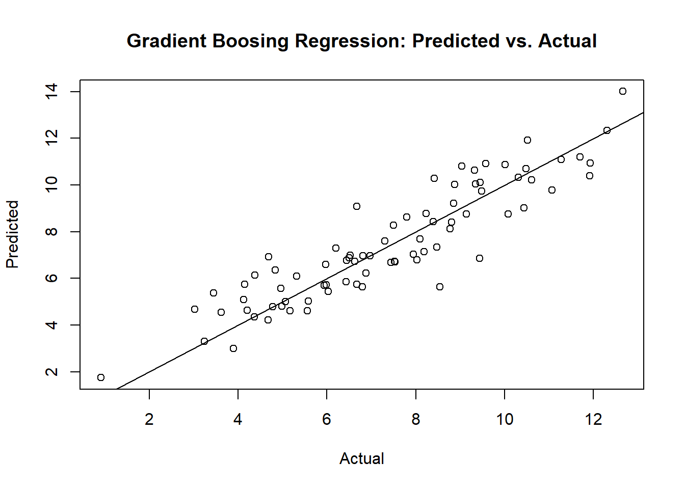

8.5 Gradient Boosting
Boosting is a method to improve (boost) the week learners sequentially and increase the model accuracy with a combined model. There are several boosting algorithms. One of the earliest was AdaBoost (adaptive boost). A more recent innovation is gradient boosting.
Adaboost creates a single split tree (decision stump) then weights the observations by how well the initial tree performed, putting more weight on the difficult observations. It then creates a second tree using the weights so that it focuses on the difficult observations. Observations that are difficult to classify receive increasing larger weights until the algorithm identifies a model that correctly classifies them. The final model returns predictions that are a majority vode. (I think Adaboost applies only to classification problems, not regressions).
Gradient boosting generalizes the AdaBoost method, so that the object is to minimize a loss function. In the case of classification problems, the loss function is the log-loss; for regression problems, the loss function is mean squared error. The regression trees are addative, so that the successive models can be added together to correct the residuals in the earlier models. Gradient boosting constructs its trees in a “greedy” manner, meaning it chooses the best splits based on purity scores like Gini or minimizing the loss. It is common to constrain the weak learners by setting maximum tree size parameters. Gradient boosting continues until it reaches maximum number of trees or an acceptible error level. This can result in overfitting, so it is common to employ regularization methods that penalize aspects of the model.
Tree Constraints. In general the more constrained the tree, the more trees need to be grown. Parameters to optimize include number of trees, tree depth, number of nodes, minimmum observations per split, and minimum improvement to loss.
Learning Rate. Each successive tree can be weighted to slow down the learning rate. Decreasing the learning rate increases the number of required trees. Common growth rates are 0.1 to 0.3.
The gradient boosting algorithm fits a shallow tree \(T_1\) to the data, \(M_1 = T_1\). Then it fits a tree \(T_2\) to the residuals and adds a weighted sum of the tree to the original tree as \(M_2 = M_1 + \gamma T_2\). For regularized boosting, include a learning rate factor \(\eta \in (0..1)\), \(M_2 = M_1 + \eta \gamma T_2\). A larger \(\eta\) produces faster learning, but risks overfitting. The process repeats until the residuals are small enough, or until it reaches the maximum iterations. Because overfitting is a risk, use cross-validation to select the appropriate number of trees (the number of trees producing the lowest RMSE).
8.5.0.1 Gradient Boosting Classification Example
Again using the OJ data set to predict Purchase, this time I’ll use the gradient boosting method by specifying method = "gbm". I’ll use tuneLength = 5 and not worry about tuneGrid anymore. Caret tunes the following hyperparameters (see modelLookup("gbm")).
n.trees: number of boosting iterationsinteraction.depth: maximum tree depthshrinkage: shrinkagen.minobsinnode: mimimum terminal node size
oj.gbm <- train(Purchase ~ .,
data = oj_train,
method = "gbm", # for bagged tree
tuneLength = 5, # choose up to 5 combinations of tuning parameters
metric = "ROC", # evaluate hyperparamter combinations with ROC
trControl = trainControl(
method = "cv", # k-fold cross validation
number = 10, # 10 folds
savePredictions = "final", # save predictions for the optimal tuning parameter1
classProbs = TRUE, # return class probabilities in addition to predicted values
summaryFunction = twoClassSummary # for binary response variable
)
)## Iter TrainDeviance ValidDeviance StepSize Improve
## 1 1.2757 nan 0.1000 0.0317
## 2 1.2205 nan 0.1000 0.0266
## 3 1.1791 nan 0.1000 0.0209
## 4 1.1380 nan 0.1000 0.0185
## 5 1.1048 nan 0.1000 0.0154
## 6 1.0791 nan 0.1000 0.0127
## 7 1.0571 nan 0.1000 0.0103
## 8 1.0344 nan 0.1000 0.0087
## 9 1.0175 nan 0.1000 0.0073
## 10 0.9987 nan 0.1000 0.0092
## 20 0.8926 nan 0.1000 0.0025
## 40 0.8005 nan 0.1000 -0.0006
## 60 0.7637 nan 0.1000 0.0006
## 80 0.7498 nan 0.1000 -0.0005
## 100 0.7399 nan 0.1000 -0.0008
## 120 0.7309 nan 0.1000 -0.0007
## 140 0.7262 nan 0.1000 -0.0007
## 160 0.7219 nan 0.1000 -0.0004
## 180 0.7176 nan 0.1000 -0.0011
## 200 0.7136 nan 0.1000 -0.0008
## 220 0.7088 nan 0.1000 -0.0003
## 240 0.7055 nan 0.1000 -0.0012
## 250 0.7028 nan 0.1000 -0.0005
##
## Iter TrainDeviance ValidDeviance StepSize Improve
## 1 1.2690 nan 0.1000 0.0330
## 2 1.2035 nan 0.1000 0.0300
## 3 1.1522 nan 0.1000 0.0254
## 4 1.1089 nan 0.1000 0.0204
## 5 1.0689 nan 0.1000 0.0188
## 6 1.0360 nan 0.1000 0.0142
## 7 1.0131 nan 0.1000 0.0108
## 8 0.9869 nan 0.1000 0.0107
## 9 0.9677 nan 0.1000 0.0101
## 10 0.9456 nan 0.1000 0.0098
## 20 0.8179 nan 0.1000 0.0034
## 40 0.7401 nan 0.1000 -0.0016
## 60 0.7116 nan 0.1000 -0.0007
## 80 0.6975 nan 0.1000 -0.0019
## 100 0.6796 nan 0.1000 -0.0013
## 120 0.6676 nan 0.1000 -0.0011
## 140 0.6559 nan 0.1000 -0.0013
## 160 0.6447 nan 0.1000 -0.0013
## 180 0.6355 nan 0.1000 -0.0011
## 200 0.6249 nan 0.1000 -0.0010
## 220 0.6181 nan 0.1000 -0.0017
## 240 0.6070 nan 0.1000 -0.0013
## 250 0.6035 nan 0.1000 -0.0007
##
## Iter TrainDeviance ValidDeviance StepSize Improve
## 1 1.2531 nan 0.1000 0.0408
## 2 1.1817 nan 0.1000 0.0323
## 3 1.1223 nan 0.1000 0.0269
## 4 1.0744 nan 0.1000 0.0210
## 5 1.0338 nan 0.1000 0.0186
## 6 0.9956 nan 0.1000 0.0176
## 7 0.9672 nan 0.1000 0.0114
## 8 0.9369 nan 0.1000 0.0127
## 9 0.9128 nan 0.1000 0.0094
## 10 0.8916 nan 0.1000 0.0085
## 20 0.7731 nan 0.1000 0.0000
## 40 0.7065 nan 0.1000 -0.0016
## 60 0.6753 nan 0.1000 -0.0006
## 80 0.6535 nan 0.1000 -0.0017
## 100 0.6341 nan 0.1000 -0.0015
## 120 0.6149 nan 0.1000 -0.0020
## 140 0.6009 nan 0.1000 -0.0010
## 160 0.5880 nan 0.1000 -0.0014
## 180 0.5681 nan 0.1000 -0.0010
## 200 0.5565 nan 0.1000 -0.0015
## 220 0.5477 nan 0.1000 -0.0019
## 240 0.5348 nan 0.1000 -0.0012
## 250 0.5289 nan 0.1000 -0.0023
##
## Iter TrainDeviance ValidDeviance StepSize Improve
## 1 1.2463 nan 0.1000 0.0454
## 2 1.1757 nan 0.1000 0.0292
## 3 1.1182 nan 0.1000 0.0287
## 4 1.0654 nan 0.1000 0.0225
## 5 1.0236 nan 0.1000 0.0183
## 6 0.9824 nan 0.1000 0.0160
## 7 0.9553 nan 0.1000 0.0109
## 8 0.9228 nan 0.1000 0.0140
## 9 0.8941 nan 0.1000 0.0115
## 10 0.8734 nan 0.1000 0.0085
## 20 0.7596 nan 0.1000 0.0015
## 40 0.6842 nan 0.1000 0.0000
## 60 0.6479 nan 0.1000 -0.0012
## 80 0.6185 nan 0.1000 -0.0020
## 100 0.5940 nan 0.1000 -0.0025
## 120 0.5743 nan 0.1000 -0.0024
## 140 0.5550 nan 0.1000 -0.0012
## 160 0.5378 nan 0.1000 -0.0009
## 180 0.5221 nan 0.1000 -0.0019
## 200 0.5087 nan 0.1000 -0.0016
## 220 0.4944 nan 0.1000 -0.0013
## 240 0.4842 nan 0.1000 -0.0003
## 250 0.4731 nan 0.1000 -0.0025
##
## Iter TrainDeviance ValidDeviance StepSize Improve
## 1 1.2473 nan 0.1000 0.0412
## 2 1.1703 nan 0.1000 0.0342
## 3 1.1109 nan 0.1000 0.0238
## 4 1.0591 nan 0.1000 0.0260
## 5 1.0162 nan 0.1000 0.0196
## 6 0.9736 nan 0.1000 0.0147
## 7 0.9402 nan 0.1000 0.0151
## 8 0.9090 nan 0.1000 0.0130
## 9 0.8864 nan 0.1000 0.0091
## 10 0.8650 nan 0.1000 0.0068
## 20 0.7426 nan 0.1000 0.0001
## 40 0.6637 nan 0.1000 -0.0008
## 60 0.6195 nan 0.1000 -0.0017
## 80 0.5885 nan 0.1000 -0.0022
## 100 0.5592 nan 0.1000 -0.0007
## 120 0.5367 nan 0.1000 -0.0023
## 140 0.5194 nan 0.1000 -0.0018
## 160 0.4966 nan 0.1000 -0.0034
## 180 0.4790 nan 0.1000 -0.0022
## 200 0.4676 nan 0.1000 -0.0015
## 220 0.4505 nan 0.1000 -0.0028
## 240 0.4343 nan 0.1000 -0.0025
## 250 0.4271 nan 0.1000 -0.0016
##
## Iter TrainDeviance ValidDeviance StepSize Improve
## 1 1.2755 nan 0.1000 0.0296
## 2 1.2304 nan 0.1000 0.0209
## 3 1.1879 nan 0.1000 0.0209
## 4 1.1503 nan 0.1000 0.0162
## 5 1.1232 nan 0.1000 0.0135
## 6 1.0959 nan 0.1000 0.0126
## 7 1.0742 nan 0.1000 0.0104
## 8 1.0560 nan 0.1000 0.0085
## 9 1.0375 nan 0.1000 0.0083
## 10 1.0256 nan 0.1000 0.0044
## 20 0.9260 nan 0.1000 0.0021
## 40 0.8304 nan 0.1000 0.0009
## 60 0.7915 nan 0.1000 -0.0008
## 80 0.7732 nan 0.1000 -0.0000
## 100 0.7637 nan 0.1000 -0.0006
## 120 0.7573 nan 0.1000 -0.0017
## 140 0.7498 nan 0.1000 -0.0004
## 160 0.7456 nan 0.1000 -0.0004
## 180 0.7420 nan 0.1000 -0.0010
## 200 0.7374 nan 0.1000 -0.0004
## 220 0.7344 nan 0.1000 -0.0014
## 240 0.7305 nan 0.1000 -0.0006
## 250 0.7298 nan 0.1000 -0.0007
##
## Iter TrainDeviance ValidDeviance StepSize Improve
## 1 1.2657 nan 0.1000 0.0353
## 2 1.2136 nan 0.1000 0.0260
## 3 1.1665 nan 0.1000 0.0223
## 4 1.1236 nan 0.1000 0.0198
## 5 1.0859 nan 0.1000 0.0124
## 6 1.0595 nan 0.1000 0.0118
## 7 1.0305 nan 0.1000 0.0116
## 8 1.0032 nan 0.1000 0.0111
## 9 0.9816 nan 0.1000 0.0082
## 10 0.9618 nan 0.1000 0.0053
## 20 0.8363 nan 0.1000 0.0026
## 40 0.7621 nan 0.1000 -0.0001
## 60 0.7342 nan 0.1000 -0.0007
## 80 0.7152 nan 0.1000 -0.0013
## 100 0.7000 nan 0.1000 -0.0012
## 120 0.6818 nan 0.1000 -0.0009
## 140 0.6737 nan 0.1000 -0.0011
## 160 0.6620 nan 0.1000 -0.0006
## 180 0.6548 nan 0.1000 -0.0016
## 200 0.6444 nan 0.1000 -0.0012
## 220 0.6388 nan 0.1000 -0.0011
## 240 0.6288 nan 0.1000 -0.0011
## 250 0.6226 nan 0.1000 -0.0014
##
## Iter TrainDeviance ValidDeviance StepSize Improve
## 1 1.2569 nan 0.1000 0.0402
## 2 1.1871 nan 0.1000 0.0325
## 3 1.1332 nan 0.1000 0.0246
## 4 1.0882 nan 0.1000 0.0185
## 5 1.0514 nan 0.1000 0.0183
## 6 1.0186 nan 0.1000 0.0144
## 7 0.9844 nan 0.1000 0.0158
## 8 0.9579 nan 0.1000 0.0120
## 9 0.9357 nan 0.1000 0.0093
## 10 0.9170 nan 0.1000 0.0078
## 20 0.8031 nan 0.1000 0.0010
## 40 0.7280 nan 0.1000 -0.0016
## 60 0.6929 nan 0.1000 0.0001
## 80 0.6669 nan 0.1000 -0.0014
## 100 0.6472 nan 0.1000 -0.0009
## 120 0.6287 nan 0.1000 -0.0023
## 140 0.6093 nan 0.1000 -0.0004
## 160 0.5934 nan 0.1000 -0.0007
## 180 0.5836 nan 0.1000 -0.0012
## 200 0.5701 nan 0.1000 -0.0027
## 220 0.5586 nan 0.1000 -0.0009
## 240 0.5490 nan 0.1000 -0.0026
## 250 0.5450 nan 0.1000 -0.0014
##
## Iter TrainDeviance ValidDeviance StepSize Improve
## 1 1.2572 nan 0.1000 0.0390
## 2 1.1950 nan 0.1000 0.0293
## 3 1.1386 nan 0.1000 0.0252
## 4 1.0907 nan 0.1000 0.0236
## 5 1.0482 nan 0.1000 0.0178
## 6 1.0140 nan 0.1000 0.0145
## 7 0.9768 nan 0.1000 0.0142
## 8 0.9491 nan 0.1000 0.0124
## 9 0.9184 nan 0.1000 0.0127
## 10 0.8970 nan 0.1000 0.0088
## 20 0.7833 nan 0.1000 0.0000
## 40 0.6953 nan 0.1000 -0.0012
## 60 0.6593 nan 0.1000 -0.0016
## 80 0.6270 nan 0.1000 -0.0023
## 100 0.5999 nan 0.1000 -0.0008
## 120 0.5766 nan 0.1000 -0.0024
## 140 0.5543 nan 0.1000 -0.0026
## 160 0.5366 nan 0.1000 -0.0023
## 180 0.5209 nan 0.1000 -0.0014
## 200 0.5054 nan 0.1000 -0.0018
## 220 0.4929 nan 0.1000 -0.0014
## 240 0.4819 nan 0.1000 -0.0014
## 250 0.4773 nan 0.1000 -0.0022
##
## Iter TrainDeviance ValidDeviance StepSize Improve
## 1 1.2541 nan 0.1000 0.0399
## 2 1.1816 nan 0.1000 0.0323
## 3 1.1245 nan 0.1000 0.0235
## 4 1.0725 nan 0.1000 0.0231
## 5 1.0292 nan 0.1000 0.0185
## 6 0.9962 nan 0.1000 0.0125
## 7 0.9647 nan 0.1000 0.0137
## 8 0.9342 nan 0.1000 0.0138
## 9 0.9121 nan 0.1000 0.0091
## 10 0.8930 nan 0.1000 0.0073
## 20 0.7697 nan 0.1000 -0.0009
## 40 0.6804 nan 0.1000 -0.0000
## 60 0.6405 nan 0.1000 -0.0019
## 80 0.6066 nan 0.1000 -0.0024
## 100 0.5709 nan 0.1000 -0.0009
## 120 0.5430 nan 0.1000 -0.0030
## 140 0.5193 nan 0.1000 -0.0011
## 160 0.5006 nan 0.1000 -0.0020
## 180 0.4839 nan 0.1000 -0.0017
## 200 0.4664 nan 0.1000 -0.0013
## 220 0.4542 nan 0.1000 -0.0010
## 240 0.4388 nan 0.1000 -0.0019
## 250 0.4334 nan 0.1000 -0.0019
##
## Iter TrainDeviance ValidDeviance StepSize Improve
## 1 1.2752 nan 0.1000 0.0311
## 2 1.2229 nan 0.1000 0.0260
## 3 1.1807 nan 0.1000 0.0210
## 4 1.1459 nan 0.1000 0.0181
## 5 1.1129 nan 0.1000 0.0137
## 6 1.0853 nan 0.1000 0.0118
## 7 1.0609 nan 0.1000 0.0104
## 8 1.0401 nan 0.1000 0.0105
## 9 1.0245 nan 0.1000 0.0079
## 10 1.0074 nan 0.1000 0.0078
## 20 0.9055 nan 0.1000 0.0022
## 40 0.8183 nan 0.1000 0.0003
## 60 0.7816 nan 0.1000 0.0002
## 80 0.7633 nan 0.1000 -0.0005
## 100 0.7536 nan 0.1000 -0.0002
## 120 0.7458 nan 0.1000 -0.0008
## 140 0.7398 nan 0.1000 -0.0007
## 160 0.7342 nan 0.1000 -0.0008
## 180 0.7312 nan 0.1000 -0.0009
## 200 0.7273 nan 0.1000 -0.0013
## 220 0.7239 nan 0.1000 -0.0010
## 240 0.7213 nan 0.1000 -0.0008
## 250 0.7192 nan 0.1000 -0.0012
##
## Iter TrainDeviance ValidDeviance StepSize Improve
## 1 1.2682 nan 0.1000 0.0304
## 2 1.2053 nan 0.1000 0.0283
## 3 1.1553 nan 0.1000 0.0230
## 4 1.1138 nan 0.1000 0.0158
## 5 1.0736 nan 0.1000 0.0155
## 6 1.0401 nan 0.1000 0.0159
## 7 1.0146 nan 0.1000 0.0120
## 8 0.9936 nan 0.1000 0.0093
## 9 0.9706 nan 0.1000 0.0094
## 10 0.9477 nan 0.1000 0.0086
## 20 0.8364 nan 0.1000 0.0019
## 40 0.7588 nan 0.1000 -0.0007
## 60 0.7337 nan 0.1000 0.0001
## 80 0.7150 nan 0.1000 -0.0015
## 100 0.7012 nan 0.1000 -0.0015
## 120 0.6825 nan 0.1000 -0.0013
## 140 0.6705 nan 0.1000 -0.0003
## 160 0.6603 nan 0.1000 -0.0012
## 180 0.6471 nan 0.1000 -0.0010
## 200 0.6380 nan 0.1000 -0.0009
## 220 0.6263 nan 0.1000 -0.0008
## 240 0.6200 nan 0.1000 -0.0014
## 250 0.6160 nan 0.1000 -0.0010
##
## Iter TrainDeviance ValidDeviance StepSize Improve
## 1 1.2532 nan 0.1000 0.0384
## 2 1.1884 nan 0.1000 0.0299
## 3 1.1343 nan 0.1000 0.0226
## 4 1.0906 nan 0.1000 0.0210
## 5 1.0567 nan 0.1000 0.0166
## 6 1.0226 nan 0.1000 0.0154
## 7 0.9923 nan 0.1000 0.0120
## 8 0.9633 nan 0.1000 0.0126
## 9 0.9443 nan 0.1000 0.0077
## 10 0.9241 nan 0.1000 0.0081
## 20 0.7999 nan 0.1000 0.0029
## 40 0.7335 nan 0.1000 -0.0020
## 60 0.6973 nan 0.1000 -0.0008
## 80 0.6718 nan 0.1000 -0.0020
## 100 0.6544 nan 0.1000 -0.0027
## 120 0.6356 nan 0.1000 -0.0019
## 140 0.6164 nan 0.1000 -0.0016
## 160 0.5985 nan 0.1000 -0.0009
## 180 0.5831 nan 0.1000 -0.0020
## 200 0.5756 nan 0.1000 -0.0025
## 220 0.5631 nan 0.1000 -0.0015
## 240 0.5510 nan 0.1000 -0.0015
## 250 0.5488 nan 0.1000 -0.0013
##
## Iter TrainDeviance ValidDeviance StepSize Improve
## 1 1.2498 nan 0.1000 0.0363
## 2 1.1786 nan 0.1000 0.0314
## 3 1.1285 nan 0.1000 0.0248
## 4 1.0808 nan 0.1000 0.0248
## 5 1.0348 nan 0.1000 0.0198
## 6 0.9949 nan 0.1000 0.0168
## 7 0.9640 nan 0.1000 0.0104
## 8 0.9352 nan 0.1000 0.0108
## 9 0.9125 nan 0.1000 0.0044
## 10 0.8931 nan 0.1000 0.0075
## 20 0.7696 nan 0.1000 0.0004
## 40 0.6910 nan 0.1000 -0.0003
## 60 0.6547 nan 0.1000 -0.0020
## 80 0.6233 nan 0.1000 -0.0021
## 100 0.5986 nan 0.1000 -0.0015
## 120 0.5775 nan 0.1000 -0.0020
## 140 0.5614 nan 0.1000 -0.0021
## 160 0.5420 nan 0.1000 -0.0005
## 180 0.5249 nan 0.1000 -0.0005
## 200 0.5107 nan 0.1000 -0.0011
## 220 0.4984 nan 0.1000 -0.0008
## 240 0.4823 nan 0.1000 -0.0024
## 250 0.4773 nan 0.1000 -0.0023
##
## Iter TrainDeviance ValidDeviance StepSize Improve
## 1 1.2492 nan 0.1000 0.0423
## 2 1.1773 nan 0.1000 0.0340
## 3 1.1141 nan 0.1000 0.0281
## 4 1.0675 nan 0.1000 0.0213
## 5 1.0249 nan 0.1000 0.0190
## 6 0.9877 nan 0.1000 0.0176
## 7 0.9545 nan 0.1000 0.0151
## 8 0.9249 nan 0.1000 0.0105
## 9 0.8990 nan 0.1000 0.0105
## 10 0.8799 nan 0.1000 0.0082
## 20 0.7630 nan 0.1000 0.0016
## 40 0.6807 nan 0.1000 -0.0016
## 60 0.6400 nan 0.1000 -0.0016
## 80 0.6088 nan 0.1000 -0.0020
## 100 0.5807 nan 0.1000 -0.0020
## 120 0.5529 nan 0.1000 -0.0025
## 140 0.5290 nan 0.1000 -0.0021
## 160 0.5099 nan 0.1000 -0.0021
## 180 0.4882 nan 0.1000 -0.0021
## 200 0.4722 nan 0.1000 -0.0009
## 220 0.4559 nan 0.1000 -0.0022
## 240 0.4408 nan 0.1000 -0.0016
## 250 0.4346 nan 0.1000 -0.0020
##
## Iter TrainDeviance ValidDeviance StepSize Improve
## 1 1.2757 nan 0.1000 0.0312
## 2 1.2200 nan 0.1000 0.0246
## 3 1.1791 nan 0.1000 0.0192
## 4 1.1429 nan 0.1000 0.0158
## 5 1.1152 nan 0.1000 0.0129
## 6 1.0916 nan 0.1000 0.0110
## 7 1.0691 nan 0.1000 0.0095
## 8 1.0490 nan 0.1000 0.0090
## 9 1.0312 nan 0.1000 0.0077
## 10 1.0173 nan 0.1000 0.0067
## 20 0.9193 nan 0.1000 0.0020
## 40 0.8253 nan 0.1000 0.0014
## 60 0.7871 nan 0.1000 -0.0007
## 80 0.7693 nan 0.1000 -0.0001
## 100 0.7601 nan 0.1000 -0.0011
## 120 0.7536 nan 0.1000 -0.0004
## 140 0.7509 nan 0.1000 -0.0007
## 160 0.7450 nan 0.1000 -0.0007
## 180 0.7397 nan 0.1000 -0.0003
## 200 0.7377 nan 0.1000 -0.0012
## 220 0.7344 nan 0.1000 -0.0006
## 240 0.7329 nan 0.1000 -0.0003
## 250 0.7308 nan 0.1000 -0.0011
##
## Iter TrainDeviance ValidDeviance StepSize Improve
## 1 1.2691 nan 0.1000 0.0314
## 2 1.2071 nan 0.1000 0.0284
## 3 1.1577 nan 0.1000 0.0240
## 4 1.1189 nan 0.1000 0.0193
## 5 1.0830 nan 0.1000 0.0174
## 6 1.0529 nan 0.1000 0.0142
## 7 1.0246 nan 0.1000 0.0121
## 8 1.0025 nan 0.1000 0.0096
## 9 0.9812 nan 0.1000 0.0089
## 10 0.9634 nan 0.1000 0.0074
## 20 0.8385 nan 0.1000 0.0022
## 40 0.7651 nan 0.1000 -0.0006
## 60 0.7382 nan 0.1000 -0.0005
## 80 0.7193 nan 0.1000 -0.0014
## 100 0.7032 nan 0.1000 -0.0014
## 120 0.6946 nan 0.1000 -0.0012
## 140 0.6790 nan 0.1000 -0.0019
## 160 0.6680 nan 0.1000 -0.0007
## 180 0.6583 nan 0.1000 -0.0009
## 200 0.6491 nan 0.1000 -0.0011
## 220 0.6417 nan 0.1000 -0.0009
## 240 0.6338 nan 0.1000 -0.0010
## 250 0.6310 nan 0.1000 -0.0018
##
## Iter TrainDeviance ValidDeviance StepSize Improve
## 1 1.2606 nan 0.1000 0.0371
## 2 1.1978 nan 0.1000 0.0313
## 3 1.1409 nan 0.1000 0.0242
## 4 1.0985 nan 0.1000 0.0189
## 5 1.0601 nan 0.1000 0.0164
## 6 1.0279 nan 0.1000 0.0146
## 7 1.0012 nan 0.1000 0.0128
## 8 0.9703 nan 0.1000 0.0140
## 9 0.9468 nan 0.1000 0.0119
## 10 0.9234 nan 0.1000 0.0102
## 20 0.8064 nan 0.1000 0.0026
## 40 0.7368 nan 0.1000 -0.0011
## 60 0.7071 nan 0.1000 -0.0008
## 80 0.6869 nan 0.1000 -0.0009
## 100 0.6617 nan 0.1000 -0.0017
## 120 0.6441 nan 0.1000 -0.0028
## 140 0.6255 nan 0.1000 -0.0019
## 160 0.6115 nan 0.1000 -0.0024
## 180 0.5937 nan 0.1000 -0.0024
## 200 0.5777 nan 0.1000 -0.0015
## 220 0.5654 nan 0.1000 -0.0017
## 240 0.5531 nan 0.1000 -0.0019
## 250 0.5480 nan 0.1000 -0.0022
##
## Iter TrainDeviance ValidDeviance StepSize Improve
## 1 1.2538 nan 0.1000 0.0384
## 2 1.1875 nan 0.1000 0.0325
## 3 1.1333 nan 0.1000 0.0260
## 4 1.0914 nan 0.1000 0.0176
## 5 1.0473 nan 0.1000 0.0189
## 6 1.0111 nan 0.1000 0.0146
## 7 0.9772 nan 0.1000 0.0158
## 8 0.9474 nan 0.1000 0.0131
## 9 0.9266 nan 0.1000 0.0090
## 10 0.9056 nan 0.1000 0.0091
## 20 0.7820 nan 0.1000 0.0016
## 40 0.7053 nan 0.1000 -0.0007
## 60 0.6698 nan 0.1000 -0.0017
## 80 0.6429 nan 0.1000 -0.0026
## 100 0.6207 nan 0.1000 -0.0013
## 120 0.6001 nan 0.1000 -0.0022
## 140 0.5806 nan 0.1000 -0.0011
## 160 0.5637 nan 0.1000 -0.0023
## 180 0.5457 nan 0.1000 -0.0021
## 200 0.5272 nan 0.1000 -0.0013
## 220 0.5089 nan 0.1000 -0.0022
## 240 0.4969 nan 0.1000 -0.0014
## 250 0.4896 nan 0.1000 -0.0016
##
## Iter TrainDeviance ValidDeviance StepSize Improve
## 1 1.2509 nan 0.1000 0.0386
## 2 1.1798 nan 0.1000 0.0355
## 3 1.1205 nan 0.1000 0.0264
## 4 1.0721 nan 0.1000 0.0221
## 5 1.0338 nan 0.1000 0.0155
## 6 0.9989 nan 0.1000 0.0145
## 7 0.9692 nan 0.1000 0.0133
## 8 0.9379 nan 0.1000 0.0130
## 9 0.9144 nan 0.1000 0.0093
## 10 0.8936 nan 0.1000 0.0087
## 20 0.7705 nan 0.1000 0.0010
## 40 0.6870 nan 0.1000 -0.0022
## 60 0.6422 nan 0.1000 -0.0031
## 80 0.6095 nan 0.1000 -0.0030
## 100 0.5801 nan 0.1000 -0.0023
## 120 0.5539 nan 0.1000 -0.0026
## 140 0.5342 nan 0.1000 -0.0014
## 160 0.5121 nan 0.1000 -0.0021
## 180 0.4946 nan 0.1000 -0.0015
## 200 0.4780 nan 0.1000 -0.0016
## 220 0.4669 nan 0.1000 -0.0009
## 240 0.4542 nan 0.1000 -0.0033
## 250 0.4479 nan 0.1000 -0.0024
##
## Iter TrainDeviance ValidDeviance StepSize Improve
## 1 1.2754 nan 0.1000 0.0295
## 2 1.2276 nan 0.1000 0.0243
## 3 1.1923 nan 0.1000 0.0160
## 4 1.1555 nan 0.1000 0.0163
## 5 1.1233 nan 0.1000 0.0120
## 6 1.0985 nan 0.1000 0.0116
## 7 1.0805 nan 0.1000 0.0081
## 8 1.0583 nan 0.1000 0.0104
## 9 1.0410 nan 0.1000 0.0085
## 10 1.0248 nan 0.1000 0.0075
## 20 0.9289 nan 0.1000 0.0020
## 40 0.8402 nan 0.1000 0.0004
## 60 0.8051 nan 0.1000 -0.0017
## 80 0.7842 nan 0.1000 -0.0004
## 100 0.7736 nan 0.1000 -0.0004
## 120 0.7665 nan 0.1000 -0.0007
## 140 0.7613 nan 0.1000 -0.0013
## 160 0.7556 nan 0.1000 -0.0003
## 180 0.7514 nan 0.1000 -0.0006
## 200 0.7464 nan 0.1000 -0.0007
## 220 0.7437 nan 0.1000 -0.0006
## 240 0.7393 nan 0.1000 -0.0008
## 250 0.7378 nan 0.1000 -0.0012
##
## Iter TrainDeviance ValidDeviance StepSize Improve
## 1 1.2756 nan 0.1000 0.0323
## 2 1.2156 nan 0.1000 0.0276
## 3 1.1672 nan 0.1000 0.0230
## 4 1.1303 nan 0.1000 0.0162
## 5 1.0930 nan 0.1000 0.0175
## 6 1.0618 nan 0.1000 0.0129
## 7 1.0360 nan 0.1000 0.0127
## 8 1.0108 nan 0.1000 0.0120
## 9 0.9894 nan 0.1000 0.0089
## 10 0.9715 nan 0.1000 0.0072
## 20 0.8537 nan 0.1000 0.0023
## 40 0.7751 nan 0.1000 -0.0005
## 60 0.7466 nan 0.1000 -0.0000
## 80 0.7271 nan 0.1000 -0.0008
## 100 0.7172 nan 0.1000 -0.0021
## 120 0.7029 nan 0.1000 -0.0018
## 140 0.6882 nan 0.1000 -0.0009
## 160 0.6772 nan 0.1000 -0.0009
## 180 0.6676 nan 0.1000 -0.0008
## 200 0.6607 nan 0.1000 -0.0015
## 220 0.6524 nan 0.1000 -0.0019
## 240 0.6428 nan 0.1000 -0.0004
## 250 0.6403 nan 0.1000 -0.0014
##
## Iter TrainDeviance ValidDeviance StepSize Improve
## 1 1.2603 nan 0.1000 0.0367
## 2 1.1993 nan 0.1000 0.0285
## 3 1.1407 nan 0.1000 0.0272
## 4 1.0936 nan 0.1000 0.0200
## 5 1.0532 nan 0.1000 0.0177
## 6 1.0224 nan 0.1000 0.0134
## 7 0.9961 nan 0.1000 0.0109
## 8 0.9690 nan 0.1000 0.0124
## 9 0.9425 nan 0.1000 0.0111
## 10 0.9242 nan 0.1000 0.0072
## 20 0.8104 nan 0.1000 0.0019
## 40 0.7401 nan 0.1000 -0.0009
## 60 0.7066 nan 0.1000 -0.0019
## 80 0.6811 nan 0.1000 -0.0029
## 100 0.6616 nan 0.1000 -0.0018
## 120 0.6414 nan 0.1000 -0.0002
## 140 0.6269 nan 0.1000 -0.0014
## 160 0.6159 nan 0.1000 -0.0018
## 180 0.6004 nan 0.1000 -0.0002
## 200 0.5862 nan 0.1000 -0.0012
## 220 0.5717 nan 0.1000 -0.0020
## 240 0.5641 nan 0.1000 -0.0013
## 250 0.5565 nan 0.1000 -0.0016
##
## Iter TrainDeviance ValidDeviance StepSize Improve
## 1 1.2589 nan 0.1000 0.0353
## 2 1.1911 nan 0.1000 0.0334
## 3 1.1342 nan 0.1000 0.0265
## 4 1.0839 nan 0.1000 0.0234
## 5 1.0421 nan 0.1000 0.0179
## 6 1.0135 nan 0.1000 0.0128
## 7 0.9869 nan 0.1000 0.0125
## 8 0.9612 nan 0.1000 0.0086
## 9 0.9370 nan 0.1000 0.0081
## 10 0.9147 nan 0.1000 0.0095
## 20 0.7933 nan 0.1000 0.0014
## 40 0.7138 nan 0.1000 -0.0009
## 60 0.6744 nan 0.1000 -0.0016
## 80 0.6446 nan 0.1000 -0.0016
## 100 0.6223 nan 0.1000 -0.0025
## 120 0.5945 nan 0.1000 -0.0020
## 140 0.5745 nan 0.1000 -0.0021
## 160 0.5568 nan 0.1000 -0.0023
## 180 0.5410 nan 0.1000 -0.0011
## 200 0.5267 nan 0.1000 -0.0011
## 220 0.5140 nan 0.1000 -0.0020
## 240 0.4996 nan 0.1000 -0.0017
## 250 0.4947 nan 0.1000 -0.0014
##
## Iter TrainDeviance ValidDeviance StepSize Improve
## 1 1.2562 nan 0.1000 0.0403
## 2 1.1844 nan 0.1000 0.0315
## 3 1.1237 nan 0.1000 0.0287
## 4 1.0732 nan 0.1000 0.0236
## 5 1.0317 nan 0.1000 0.0182
## 6 0.9925 nan 0.1000 0.0175
## 7 0.9623 nan 0.1000 0.0128
## 8 0.9364 nan 0.1000 0.0099
## 9 0.9118 nan 0.1000 0.0096
## 10 0.8909 nan 0.1000 0.0069
## 20 0.7743 nan 0.1000 0.0007
## 40 0.6916 nan 0.1000 -0.0009
## 60 0.6507 nan 0.1000 -0.0016
## 80 0.6170 nan 0.1000 -0.0035
## 100 0.5860 nan 0.1000 -0.0026
## 120 0.5613 nan 0.1000 -0.0025
## 140 0.5430 nan 0.1000 -0.0029
## 160 0.5199 nan 0.1000 -0.0008
## 180 0.5037 nan 0.1000 -0.0014
## 200 0.4875 nan 0.1000 -0.0020
## 220 0.4704 nan 0.1000 -0.0009
## 240 0.4574 nan 0.1000 -0.0017
## 250 0.4513 nan 0.1000 -0.0014
##
## Iter TrainDeviance ValidDeviance StepSize Improve
## 1 1.2712 nan 0.1000 0.0297
## 2 1.2228 nan 0.1000 0.0245
## 3 1.1847 nan 0.1000 0.0192
## 4 1.1496 nan 0.1000 0.0154
## 5 1.1215 nan 0.1000 0.0128
## 6 1.0987 nan 0.1000 0.0115
## 7 1.0749 nan 0.1000 0.0104
## 8 1.0503 nan 0.1000 0.0100
## 9 1.0363 nan 0.1000 0.0067
## 10 1.0208 nan 0.1000 0.0063
## 20 0.9167 nan 0.1000 0.0029
## 40 0.8238 nan 0.1000 0.0009
## 60 0.7819 nan 0.1000 -0.0004
## 80 0.7639 nan 0.1000 -0.0002
## 100 0.7514 nan 0.1000 -0.0003
## 120 0.7435 nan 0.1000 -0.0006
## 140 0.7396 nan 0.1000 -0.0007
## 160 0.7360 nan 0.1000 -0.0009
## 180 0.7306 nan 0.1000 -0.0008
## 200 0.7281 nan 0.1000 -0.0012
## 220 0.7245 nan 0.1000 -0.0007
## 240 0.7222 nan 0.1000 -0.0004
## 250 0.7196 nan 0.1000 -0.0005
##
## Iter TrainDeviance ValidDeviance StepSize Improve
## 1 1.2669 nan 0.1000 0.0341
## 2 1.2101 nan 0.1000 0.0242
## 3 1.1596 nan 0.1000 0.0220
## 4 1.1177 nan 0.1000 0.0208
## 5 1.0844 nan 0.1000 0.0135
## 6 1.0538 nan 0.1000 0.0136
## 7 1.0244 nan 0.1000 0.0132
## 8 0.9970 nan 0.1000 0.0108
## 9 0.9756 nan 0.1000 0.0100
## 10 0.9597 nan 0.1000 0.0068
## 20 0.8340 nan 0.1000 0.0032
## 40 0.7577 nan 0.1000 -0.0001
## 60 0.7298 nan 0.1000 -0.0012
## 80 0.7142 nan 0.1000 -0.0006
## 100 0.6997 nan 0.1000 -0.0009
## 120 0.6894 nan 0.1000 -0.0017
## 140 0.6781 nan 0.1000 -0.0024
## 160 0.6667 nan 0.1000 -0.0014
## 180 0.6567 nan 0.1000 -0.0007
## 200 0.6466 nan 0.1000 -0.0008
## 220 0.6371 nan 0.1000 -0.0021
## 240 0.6287 nan 0.1000 -0.0010
## 250 0.6238 nan 0.1000 -0.0009
##
## Iter TrainDeviance ValidDeviance StepSize Improve
## 1 1.2624 nan 0.1000 0.0360
## 2 1.1962 nan 0.1000 0.0298
## 3 1.1376 nan 0.1000 0.0263
## 4 1.0917 nan 0.1000 0.0219
## 5 1.0512 nan 0.1000 0.0158
## 6 1.0196 nan 0.1000 0.0147
## 7 0.9858 nan 0.1000 0.0159
## 8 0.9617 nan 0.1000 0.0109
## 9 0.9366 nan 0.1000 0.0106
## 10 0.9187 nan 0.1000 0.0069
## 20 0.7959 nan 0.1000 0.0008
## 40 0.7303 nan 0.1000 -0.0001
## 60 0.7032 nan 0.1000 -0.0017
## 80 0.6757 nan 0.1000 -0.0010
## 100 0.6569 nan 0.1000 -0.0032
## 120 0.6362 nan 0.1000 -0.0012
## 140 0.6174 nan 0.1000 -0.0013
## 160 0.6028 nan 0.1000 -0.0013
## 180 0.5881 nan 0.1000 -0.0019
## 200 0.5737 nan 0.1000 -0.0030
## 220 0.5618 nan 0.1000 -0.0020
## 240 0.5516 nan 0.1000 -0.0014
## 250 0.5480 nan 0.1000 -0.0021
##
## Iter TrainDeviance ValidDeviance StepSize Improve
## 1 1.2515 nan 0.1000 0.0384
## 2 1.1824 nan 0.1000 0.0333
## 3 1.1240 nan 0.1000 0.0261
## 4 1.0772 nan 0.1000 0.0205
## 5 1.0362 nan 0.1000 0.0187
## 6 1.0029 nan 0.1000 0.0121
## 7 0.9718 nan 0.1000 0.0147
## 8 0.9458 nan 0.1000 0.0103
## 9 0.9226 nan 0.1000 0.0102
## 10 0.9053 nan 0.1000 0.0082
## 20 0.7840 nan 0.1000 0.0016
## 40 0.7059 nan 0.1000 -0.0022
## 60 0.6679 nan 0.1000 -0.0011
## 80 0.6351 nan 0.1000 -0.0025
## 100 0.6149 nan 0.1000 -0.0033
## 120 0.5922 nan 0.1000 -0.0011
## 140 0.5730 nan 0.1000 -0.0025
## 160 0.5587 nan 0.1000 -0.0021
## 180 0.5414 nan 0.1000 -0.0017
## 200 0.5267 nan 0.1000 -0.0014
## 220 0.5145 nan 0.1000 -0.0012
## 240 0.5008 nan 0.1000 -0.0015
## 250 0.4954 nan 0.1000 -0.0017
##
## Iter TrainDeviance ValidDeviance StepSize Improve
## 1 1.2537 nan 0.1000 0.0430
## 2 1.1819 nan 0.1000 0.0323
## 3 1.1177 nan 0.1000 0.0285
## 4 1.0698 nan 0.1000 0.0214
## 5 1.0292 nan 0.1000 0.0170
## 6 0.9856 nan 0.1000 0.0174
## 7 0.9564 nan 0.1000 0.0094
## 8 0.9268 nan 0.1000 0.0116
## 9 0.9037 nan 0.1000 0.0094
## 10 0.8817 nan 0.1000 0.0078
## 20 0.7600 nan 0.1000 0.0009
## 40 0.6794 nan 0.1000 -0.0004
## 60 0.6356 nan 0.1000 -0.0012
## 80 0.6033 nan 0.1000 -0.0026
## 100 0.5751 nan 0.1000 -0.0016
## 120 0.5513 nan 0.1000 -0.0020
## 140 0.5340 nan 0.1000 -0.0024
## 160 0.5136 nan 0.1000 -0.0030
## 180 0.4960 nan 0.1000 -0.0027
## 200 0.4813 nan 0.1000 -0.0008
## 220 0.4666 nan 0.1000 -0.0014
## 240 0.4498 nan 0.1000 -0.0017
## 250 0.4447 nan 0.1000 -0.0027
##
## Iter TrainDeviance ValidDeviance StepSize Improve
## 1 1.2793 nan 0.1000 0.0294
## 2 1.2337 nan 0.1000 0.0211
## 3 1.1880 nan 0.1000 0.0205
## 4 1.1507 nan 0.1000 0.0165
## 5 1.1256 nan 0.1000 0.0134
## 6 1.1010 nan 0.1000 0.0096
## 7 1.0756 nan 0.1000 0.0122
## 8 1.0580 nan 0.1000 0.0076
## 9 1.0419 nan 0.1000 0.0070
## 10 1.0228 nan 0.1000 0.0089
## 20 0.9162 nan 0.1000 0.0014
## 40 0.8210 nan 0.1000 0.0003
## 60 0.7833 nan 0.1000 0.0000
## 80 0.7630 nan 0.1000 -0.0009
## 100 0.7516 nan 0.1000 -0.0003
## 120 0.7441 nan 0.1000 -0.0009
## 140 0.7391 nan 0.1000 -0.0009
## 160 0.7323 nan 0.1000 -0.0008
## 180 0.7283 nan 0.1000 -0.0007
## 200 0.7256 nan 0.1000 -0.0005
## 220 0.7232 nan 0.1000 -0.0007
## 240 0.7192 nan 0.1000 -0.0007
## 250 0.7177 nan 0.1000 -0.0009
##
## Iter TrainDeviance ValidDeviance StepSize Improve
## 1 1.2655 nan 0.1000 0.0348
## 2 1.2066 nan 0.1000 0.0255
## 3 1.1640 nan 0.1000 0.0209
## 4 1.1241 nan 0.1000 0.0185
## 5 1.0881 nan 0.1000 0.0149
## 6 1.0570 nan 0.1000 0.0129
## 7 1.0289 nan 0.1000 0.0103
## 8 1.0014 nan 0.1000 0.0117
## 9 0.9814 nan 0.1000 0.0077
## 10 0.9604 nan 0.1000 0.0074
## 20 0.8341 nan 0.1000 0.0015
## 40 0.7549 nan 0.1000 -0.0006
## 60 0.7298 nan 0.1000 -0.0006
## 80 0.7110 nan 0.1000 -0.0007
## 100 0.6956 nan 0.1000 -0.0009
## 120 0.6830 nan 0.1000 -0.0020
## 140 0.6686 nan 0.1000 -0.0010
## 160 0.6591 nan 0.1000 -0.0014
## 180 0.6469 nan 0.1000 -0.0014
## 200 0.6361 nan 0.1000 -0.0014
## 220 0.6265 nan 0.1000 -0.0017
## 240 0.6194 nan 0.1000 -0.0012
## 250 0.6130 nan 0.1000 -0.0014
##
## Iter TrainDeviance ValidDeviance StepSize Improve
## 1 1.2599 nan 0.1000 0.0355
## 2 1.1914 nan 0.1000 0.0314
## 3 1.1333 nan 0.1000 0.0256
## 4 1.0873 nan 0.1000 0.0204
## 5 1.0480 nan 0.1000 0.0183
## 6 1.0163 nan 0.1000 0.0148
## 7 0.9827 nan 0.1000 0.0147
## 8 0.9572 nan 0.1000 0.0098
## 9 0.9313 nan 0.1000 0.0108
## 10 0.9086 nan 0.1000 0.0107
## 20 0.7947 nan 0.1000 0.0002
## 40 0.7194 nan 0.1000 -0.0010
## 60 0.6873 nan 0.1000 -0.0010
## 80 0.6681 nan 0.1000 -0.0007
## 100 0.6463 nan 0.1000 -0.0019
## 120 0.6261 nan 0.1000 -0.0014
## 140 0.6082 nan 0.1000 -0.0019
## 160 0.5918 nan 0.1000 -0.0021
## 180 0.5794 nan 0.1000 -0.0015
## 200 0.5672 nan 0.1000 -0.0019
## 220 0.5546 nan 0.1000 -0.0020
## 240 0.5432 nan 0.1000 -0.0016
## 250 0.5382 nan 0.1000 -0.0019
##
## Iter TrainDeviance ValidDeviance StepSize Improve
## 1 1.2497 nan 0.1000 0.0392
## 2 1.1782 nan 0.1000 0.0312
## 3 1.1203 nan 0.1000 0.0259
## 4 1.0800 nan 0.1000 0.0189
## 5 1.0352 nan 0.1000 0.0156
## 6 0.9983 nan 0.1000 0.0166
## 7 0.9615 nan 0.1000 0.0149
## 8 0.9335 nan 0.1000 0.0099
## 9 0.9102 nan 0.1000 0.0099
## 10 0.8922 nan 0.1000 0.0082
## 20 0.7734 nan 0.1000 0.0012
## 40 0.7027 nan 0.1000 -0.0004
## 60 0.6518 nan 0.1000 -0.0013
## 80 0.6182 nan 0.1000 -0.0003
## 100 0.5960 nan 0.1000 -0.0020
## 120 0.5768 nan 0.1000 -0.0016
## 140 0.5563 nan 0.1000 -0.0029
## 160 0.5373 nan 0.1000 -0.0028
## 180 0.5187 nan 0.1000 -0.0023
## 200 0.5029 nan 0.1000 -0.0024
## 220 0.4921 nan 0.1000 -0.0032
## 240 0.4793 nan 0.1000 -0.0021
## 250 0.4704 nan 0.1000 -0.0030
##
## Iter TrainDeviance ValidDeviance StepSize Improve
## 1 1.2478 nan 0.1000 0.0410
## 2 1.1723 nan 0.1000 0.0328
## 3 1.1143 nan 0.1000 0.0231
## 4 1.0612 nan 0.1000 0.0252
## 5 1.0175 nan 0.1000 0.0204
## 6 0.9820 nan 0.1000 0.0142
## 7 0.9474 nan 0.1000 0.0140
## 8 0.9195 nan 0.1000 0.0109
## 9 0.8920 nan 0.1000 0.0080
## 10 0.8715 nan 0.1000 0.0072
## 20 0.7519 nan 0.1000 0.0006
## 40 0.6685 nan 0.1000 -0.0015
## 60 0.6283 nan 0.1000 -0.0036
## 80 0.5935 nan 0.1000 -0.0012
## 100 0.5617 nan 0.1000 -0.0017
## 120 0.5326 nan 0.1000 -0.0019
## 140 0.5034 nan 0.1000 -0.0018
## 160 0.4834 nan 0.1000 -0.0010
## 180 0.4657 nan 0.1000 -0.0024
## 200 0.4493 nan 0.1000 -0.0019
## 220 0.4330 nan 0.1000 -0.0021
## 240 0.4199 nan 0.1000 -0.0020
## 250 0.4146 nan 0.1000 -0.0022
##
## Iter TrainDeviance ValidDeviance StepSize Improve
## 1 1.2695 nan 0.1000 0.0326
## 2 1.2152 nan 0.1000 0.0247
## 3 1.1754 nan 0.1000 0.0204
## 4 1.1362 nan 0.1000 0.0172
## 5 1.1024 nan 0.1000 0.0129
## 6 1.0755 nan 0.1000 0.0127
## 7 1.0508 nan 0.1000 0.0099
## 8 1.0303 nan 0.1000 0.0082
## 9 1.0170 nan 0.1000 0.0035
## 10 0.9986 nan 0.1000 0.0091
## 20 0.8966 nan 0.1000 0.0029
## 40 0.8035 nan 0.1000 0.0009
## 60 0.7677 nan 0.1000 -0.0002
## 80 0.7470 nan 0.1000 -0.0005
## 100 0.7358 nan 0.1000 -0.0006
## 120 0.7296 nan 0.1000 -0.0006
## 140 0.7232 nan 0.1000 -0.0004
## 160 0.7186 nan 0.1000 -0.0004
## 180 0.7154 nan 0.1000 -0.0005
## 200 0.7112 nan 0.1000 -0.0008
## 220 0.7086 nan 0.1000 -0.0008
## 240 0.7056 nan 0.1000 -0.0008
## 250 0.7035 nan 0.1000 -0.0002
##
## Iter TrainDeviance ValidDeviance StepSize Improve
## 1 1.2616 nan 0.1000 0.0341
## 2 1.1989 nan 0.1000 0.0297
## 3 1.1530 nan 0.1000 0.0228
## 4 1.1080 nan 0.1000 0.0207
## 5 1.0681 nan 0.1000 0.0167
## 6 1.0352 nan 0.1000 0.0143
## 7 1.0070 nan 0.1000 0.0108
## 8 0.9791 nan 0.1000 0.0094
## 9 0.9556 nan 0.1000 0.0107
## 10 0.9401 nan 0.1000 0.0070
## 20 0.8221 nan 0.1000 0.0021
## 40 0.7419 nan 0.1000 0.0000
## 60 0.7153 nan 0.1000 -0.0014
## 80 0.6964 nan 0.1000 -0.0007
## 100 0.6807 nan 0.1000 -0.0008
## 120 0.6636 nan 0.1000 -0.0016
## 140 0.6503 nan 0.1000 -0.0008
## 160 0.6420 nan 0.1000 -0.0009
## 180 0.6313 nan 0.1000 -0.0011
## 200 0.6217 nan 0.1000 -0.0008
## 220 0.6128 nan 0.1000 -0.0016
## 240 0.6023 nan 0.1000 -0.0017
## 250 0.5993 nan 0.1000 -0.0004
##
## Iter TrainDeviance ValidDeviance StepSize Improve
## 1 1.2513 nan 0.1000 0.0399
## 2 1.1900 nan 0.1000 0.0319
## 3 1.1299 nan 0.1000 0.0287
## 4 1.0744 nan 0.1000 0.0245
## 5 1.0358 nan 0.1000 0.0188
## 6 1.0012 nan 0.1000 0.0154
## 7 0.9720 nan 0.1000 0.0121
## 8 0.9448 nan 0.1000 0.0120
## 9 0.9199 nan 0.1000 0.0081
## 10 0.9006 nan 0.1000 0.0092
## 20 0.7763 nan 0.1000 0.0011
## 40 0.7048 nan 0.1000 -0.0014
## 60 0.6685 nan 0.1000 -0.0009
## 80 0.6493 nan 0.1000 -0.0026
## 100 0.6298 nan 0.1000 -0.0021
## 120 0.6104 nan 0.1000 -0.0020
## 140 0.5975 nan 0.1000 -0.0013
## 160 0.5797 nan 0.1000 -0.0018
## 180 0.5674 nan 0.1000 -0.0009
## 200 0.5548 nan 0.1000 -0.0023
## 220 0.5433 nan 0.1000 -0.0017
## 240 0.5321 nan 0.1000 -0.0015
## 250 0.5228 nan 0.1000 -0.0015
##
## Iter TrainDeviance ValidDeviance StepSize Improve
## 1 1.2548 nan 0.1000 0.0370
## 2 1.1816 nan 0.1000 0.0331
## 3 1.1221 nan 0.1000 0.0277
## 4 1.0701 nan 0.1000 0.0237
## 5 1.0253 nan 0.1000 0.0222
## 6 0.9885 nan 0.1000 0.0166
## 7 0.9537 nan 0.1000 0.0164
## 8 0.9270 nan 0.1000 0.0106
## 9 0.9049 nan 0.1000 0.0081
## 10 0.8822 nan 0.1000 0.0083
## 20 0.7643 nan 0.1000 0.0013
## 40 0.6871 nan 0.1000 -0.0021
## 60 0.6451 nan 0.1000 -0.0000
## 80 0.6161 nan 0.1000 -0.0024
## 100 0.5833 nan 0.1000 -0.0019
## 120 0.5584 nan 0.1000 -0.0004
## 140 0.5383 nan 0.1000 -0.0023
## 160 0.5202 nan 0.1000 -0.0010
## 180 0.5013 nan 0.1000 -0.0026
## 200 0.4858 nan 0.1000 -0.0020
## 220 0.4713 nan 0.1000 -0.0015
## 240 0.4589 nan 0.1000 -0.0014
## 250 0.4518 nan 0.1000 -0.0019
##
## Iter TrainDeviance ValidDeviance StepSize Improve
## 1 1.2435 nan 0.1000 0.0382
## 2 1.1704 nan 0.1000 0.0350
## 3 1.1045 nan 0.1000 0.0304
## 4 1.0572 nan 0.1000 0.0225
## 5 1.0121 nan 0.1000 0.0197
## 6 0.9712 nan 0.1000 0.0164
## 7 0.9385 nan 0.1000 0.0138
## 8 0.9064 nan 0.1000 0.0133
## 9 0.8792 nan 0.1000 0.0109
## 10 0.8592 nan 0.1000 0.0049
## 20 0.7289 nan 0.1000 0.0017
## 40 0.6539 nan 0.1000 -0.0015
## 60 0.6135 nan 0.1000 -0.0024
## 80 0.5764 nan 0.1000 -0.0019
## 100 0.5433 nan 0.1000 -0.0035
## 120 0.5145 nan 0.1000 -0.0015
## 140 0.4949 nan 0.1000 -0.0006
## 160 0.4762 nan 0.1000 -0.0013
## 180 0.4553 nan 0.1000 -0.0018
## 200 0.4397 nan 0.1000 -0.0024
## 220 0.4259 nan 0.1000 -0.0018
## 240 0.4106 nan 0.1000 -0.0021
## 250 0.4031 nan 0.1000 -0.0019
##
## Iter TrainDeviance ValidDeviance StepSize Improve
## 1 1.2668 nan 0.1000 0.0307
## 2 1.2112 nan 0.1000 0.0233
## 3 1.1693 nan 0.1000 0.0194
## 4 1.1331 nan 0.1000 0.0168
## 5 1.1037 nan 0.1000 0.0129
## 6 1.0755 nan 0.1000 0.0110
## 7 1.0556 nan 0.1000 0.0095
## 8 1.0362 nan 0.1000 0.0082
## 9 1.0212 nan 0.1000 0.0066
## 10 1.0053 nan 0.1000 0.0072
## 20 0.9106 nan 0.1000 0.0034
## 40 0.8137 nan 0.1000 0.0005
## 60 0.7743 nan 0.1000 -0.0001
## 80 0.7563 nan 0.1000 -0.0007
## 100 0.7466 nan 0.1000 -0.0011
## 120 0.7378 nan 0.1000 0.0000
## 140 0.7310 nan 0.1000 -0.0007
## 160 0.7265 nan 0.1000 -0.0009
## 180 0.7214 nan 0.1000 -0.0002
## 200 0.7177 nan 0.1000 -0.0008
## 220 0.7146 nan 0.1000 -0.0013
## 240 0.7110 nan 0.1000 -0.0014
## 250 0.7085 nan 0.1000 -0.0009
##
## Iter TrainDeviance ValidDeviance StepSize Improve
## 1 1.2621 nan 0.1000 0.0350
## 2 1.2045 nan 0.1000 0.0289
## 3 1.1569 nan 0.1000 0.0218
## 4 1.1136 nan 0.1000 0.0215
## 5 1.0750 nan 0.1000 0.0185
## 6 1.0451 nan 0.1000 0.0117
## 7 1.0186 nan 0.1000 0.0118
## 8 0.9931 nan 0.1000 0.0097
## 9 0.9720 nan 0.1000 0.0071
## 10 0.9541 nan 0.1000 0.0082
## 20 0.8360 nan 0.1000 0.0027
## 40 0.7541 nan 0.1000 0.0003
## 60 0.7264 nan 0.1000 -0.0024
## 80 0.7067 nan 0.1000 -0.0012
## 100 0.6899 nan 0.1000 -0.0006
## 120 0.6787 nan 0.1000 -0.0004
## 140 0.6631 nan 0.1000 -0.0002
## 160 0.6507 nan 0.1000 -0.0008
## 180 0.6405 nan 0.1000 -0.0010
## 200 0.6339 nan 0.1000 -0.0007
## 220 0.6242 nan 0.1000 -0.0007
## 240 0.6154 nan 0.1000 -0.0011
## 250 0.6095 nan 0.1000 -0.0006
##
## Iter TrainDeviance ValidDeviance StepSize Improve
## 1 1.2632 nan 0.1000 0.0342
## 2 1.1959 nan 0.1000 0.0287
## 3 1.1429 nan 0.1000 0.0267
## 4 1.0972 nan 0.1000 0.0205
## 5 1.0593 nan 0.1000 0.0168
## 6 1.0207 nan 0.1000 0.0173
## 7 0.9888 nan 0.1000 0.0136
## 8 0.9621 nan 0.1000 0.0112
## 9 0.9388 nan 0.1000 0.0092
## 10 0.9150 nan 0.1000 0.0087
## 20 0.7902 nan 0.1000 0.0007
## 40 0.7133 nan 0.1000 -0.0014
## 60 0.6798 nan 0.1000 -0.0010
## 80 0.6580 nan 0.1000 -0.0017
## 100 0.6396 nan 0.1000 -0.0010
## 120 0.6209 nan 0.1000 -0.0007
## 140 0.6030 nan 0.1000 -0.0016
## 160 0.5849 nan 0.1000 -0.0017
## 180 0.5733 nan 0.1000 -0.0009
## 200 0.5586 nan 0.1000 -0.0016
## 220 0.5420 nan 0.1000 -0.0007
## 240 0.5324 nan 0.1000 -0.0009
## 250 0.5271 nan 0.1000 -0.0013
##
## Iter TrainDeviance ValidDeviance StepSize Improve
## 1 1.2484 nan 0.1000 0.0427
## 2 1.1835 nan 0.1000 0.0321
## 3 1.1229 nan 0.1000 0.0279
## 4 1.0706 nan 0.1000 0.0217
## 5 1.0298 nan 0.1000 0.0184
## 6 0.9923 nan 0.1000 0.0169
## 7 0.9583 nan 0.1000 0.0143
## 8 0.9299 nan 0.1000 0.0095
## 9 0.9028 nan 0.1000 0.0102
## 10 0.8808 nan 0.1000 0.0061
## 20 0.7622 nan 0.1000 0.0014
## 40 0.6812 nan 0.1000 -0.0014
## 60 0.6394 nan 0.1000 0.0001
## 80 0.6043 nan 0.1000 -0.0018
## 100 0.5808 nan 0.1000 -0.0028
## 120 0.5575 nan 0.1000 -0.0015
## 140 0.5348 nan 0.1000 -0.0015
## 160 0.5172 nan 0.1000 -0.0015
## 180 0.5038 nan 0.1000 -0.0018
## 200 0.4892 nan 0.1000 -0.0015
## 220 0.4736 nan 0.1000 -0.0013
## 240 0.4591 nan 0.1000 -0.0021
## 250 0.4535 nan 0.1000 -0.0033
##
## Iter TrainDeviance ValidDeviance StepSize Improve
## 1 1.2496 nan 0.1000 0.0437
## 2 1.1761 nan 0.1000 0.0321
## 3 1.1154 nan 0.1000 0.0290
## 4 1.0631 nan 0.1000 0.0229
## 5 1.0186 nan 0.1000 0.0182
## 6 0.9765 nan 0.1000 0.0176
## 7 0.9429 nan 0.1000 0.0132
## 8 0.9157 nan 0.1000 0.0120
## 9 0.8892 nan 0.1000 0.0096
## 10 0.8652 nan 0.1000 0.0079
## 20 0.7400 nan 0.1000 0.0021
## 40 0.6617 nan 0.1000 -0.0015
## 60 0.6131 nan 0.1000 -0.0025
## 80 0.5793 nan 0.1000 -0.0019
## 100 0.5491 nan 0.1000 -0.0019
## 120 0.5207 nan 0.1000 -0.0028
## 140 0.5000 nan 0.1000 -0.0022
## 160 0.4821 nan 0.1000 -0.0021
## 180 0.4616 nan 0.1000 -0.0017
## 200 0.4435 nan 0.1000 -0.0013
## 220 0.4325 nan 0.1000 -0.0019
## 240 0.4151 nan 0.1000 -0.0013
## 250 0.4090 nan 0.1000 -0.0017
##
## Iter TrainDeviance ValidDeviance StepSize Improve
## 1 1.2777 nan 0.1000 0.0280
## 2 1.2263 nan 0.1000 0.0242
## 3 1.1908 nan 0.1000 0.0176
## 4 1.1537 nan 0.1000 0.0180
## 5 1.1227 nan 0.1000 0.0144
## 6 1.0952 nan 0.1000 0.0108
## 7 1.0723 nan 0.1000 0.0103
## 8 1.0549 nan 0.1000 0.0080
## 9 1.0377 nan 0.1000 0.0086
## 10 1.0240 nan 0.1000 0.0067
## 20 0.9253 nan 0.1000 0.0032
## 40 0.8406 nan 0.1000 -0.0002
## 60 0.8031 nan 0.1000 0.0004
## 80 0.7833 nan 0.1000 -0.0001
## 100 0.7738 nan 0.1000 -0.0002
## 120 0.7681 nan 0.1000 -0.0007
## 140 0.7630 nan 0.1000 -0.0005
## 160 0.7596 nan 0.1000 -0.0009
## 180 0.7568 nan 0.1000 -0.0007
## 200 0.7531 nan 0.1000 -0.0018
## 220 0.7490 nan 0.1000 -0.0002
## 240 0.7460 nan 0.1000 -0.0012
## 250 0.7454 nan 0.1000 -0.0004
##
## Iter TrainDeviance ValidDeviance StepSize Improve
## 1 1.2638 nan 0.1000 0.0338
## 2 1.2117 nan 0.1000 0.0254
## 3 1.1685 nan 0.1000 0.0218
## 4 1.1283 nan 0.1000 0.0182
## 5 1.0896 nan 0.1000 0.0164
## 6 1.0572 nan 0.1000 0.0126
## 7 1.0313 nan 0.1000 0.0109
## 8 1.0077 nan 0.1000 0.0106
## 9 0.9873 nan 0.1000 0.0085
## 10 0.9705 nan 0.1000 0.0073
## 20 0.8526 nan 0.1000 0.0032
## 40 0.7763 nan 0.1000 -0.0002
## 60 0.7483 nan 0.1000 -0.0013
## 80 0.7323 nan 0.1000 -0.0002
## 100 0.7187 nan 0.1000 -0.0007
## 120 0.7092 nan 0.1000 -0.0013
## 140 0.6976 nan 0.1000 -0.0017
## 160 0.6877 nan 0.1000 -0.0006
## 180 0.6731 nan 0.1000 -0.0019
## 200 0.6646 nan 0.1000 -0.0016
## 220 0.6556 nan 0.1000 -0.0013
## 240 0.6494 nan 0.1000 -0.0018
## 250 0.6453 nan 0.1000 -0.0015
##
## Iter TrainDeviance ValidDeviance StepSize Improve
## 1 1.2641 nan 0.1000 0.0402
## 2 1.2046 nan 0.1000 0.0273
## 3 1.1480 nan 0.1000 0.0276
## 4 1.1017 nan 0.1000 0.0216
## 5 1.0650 nan 0.1000 0.0186
## 6 1.0284 nan 0.1000 0.0161
## 7 0.9991 nan 0.1000 0.0112
## 8 0.9733 nan 0.1000 0.0087
## 9 0.9507 nan 0.1000 0.0102
## 10 0.9321 nan 0.1000 0.0077
## 20 0.8071 nan 0.1000 0.0020
## 40 0.7351 nan 0.1000 -0.0005
## 60 0.7083 nan 0.1000 -0.0019
## 80 0.6865 nan 0.1000 -0.0016
## 100 0.6688 nan 0.1000 -0.0016
## 120 0.6519 nan 0.1000 -0.0019
## 140 0.6363 nan 0.1000 -0.0021
## 160 0.6254 nan 0.1000 -0.0022
## 180 0.6116 nan 0.1000 -0.0010
## 200 0.5989 nan 0.1000 -0.0021
## 220 0.5885 nan 0.1000 -0.0016
## 240 0.5770 nan 0.1000 -0.0010
## 250 0.5739 nan 0.1000 -0.0011
##
## Iter TrainDeviance ValidDeviance StepSize Improve
## 1 1.2532 nan 0.1000 0.0400
## 2 1.1877 nan 0.1000 0.0276
## 3 1.1326 nan 0.1000 0.0233
## 4 1.0851 nan 0.1000 0.0189
## 5 1.0445 nan 0.1000 0.0170
## 6 1.0116 nan 0.1000 0.0129
## 7 0.9751 nan 0.1000 0.0153
## 8 0.9487 nan 0.1000 0.0125
## 9 0.9245 nan 0.1000 0.0108
## 10 0.9063 nan 0.1000 0.0073
## 20 0.7880 nan 0.1000 0.0018
## 40 0.7174 nan 0.1000 0.0003
## 60 0.6804 nan 0.1000 -0.0009
## 80 0.6517 nan 0.1000 -0.0010
## 100 0.6292 nan 0.1000 -0.0023
## 120 0.6035 nan 0.1000 -0.0021
## 140 0.5854 nan 0.1000 -0.0014
## 160 0.5662 nan 0.1000 -0.0015
## 180 0.5521 nan 0.1000 -0.0027
## 200 0.5364 nan 0.1000 -0.0006
## 220 0.5267 nan 0.1000 -0.0016
## 240 0.5163 nan 0.1000 -0.0023
## 250 0.5060 nan 0.1000 -0.0022
##
## Iter TrainDeviance ValidDeviance StepSize Improve
## 1 1.2483 nan 0.1000 0.0408
## 2 1.1785 nan 0.1000 0.0316
## 3 1.1275 nan 0.1000 0.0260
## 4 1.0783 nan 0.1000 0.0229
## 5 1.0389 nan 0.1000 0.0168
## 6 0.9976 nan 0.1000 0.0163
## 7 0.9681 nan 0.1000 0.0120
## 8 0.9428 nan 0.1000 0.0113
## 9 0.9165 nan 0.1000 0.0118
## 10 0.8922 nan 0.1000 0.0095
## 20 0.7726 nan 0.1000 0.0008
## 40 0.6919 nan 0.1000 -0.0021
## 60 0.6454 nan 0.1000 -0.0016
## 80 0.6132 nan 0.1000 -0.0018
## 100 0.5819 nan 0.1000 -0.0031
## 120 0.5608 nan 0.1000 -0.0029
## 140 0.5386 nan 0.1000 -0.0016
## 160 0.5133 nan 0.1000 -0.0024
## 180 0.4984 nan 0.1000 -0.0014
## 200 0.4773 nan 0.1000 -0.0009
## 220 0.4570 nan 0.1000 -0.0013
## 240 0.4444 nan 0.1000 -0.0017
## 250 0.4393 nan 0.1000 -0.0017
##
## Iter TrainDeviance ValidDeviance StepSize Improve
## 1 1.2499 nan 0.1000 0.0408
## 2 1.1698 nan 0.1000 0.0351
## 3 1.1118 nan 0.1000 0.0293
## 4 1.0622 nan 0.1000 0.0224
## 5 1.0194 nan 0.1000 0.0194
## 6 0.9791 nan 0.1000 0.0172
## 7 0.9469 nan 0.1000 0.0143
## 8 0.9232 nan 0.1000 0.0100
## 9 0.8984 nan 0.1000 0.0105
## 10 0.8774 nan 0.1000 0.0081
## 20 0.7633 nan 0.1000 0.0001
## 40 0.6875 nan 0.1000 -0.0011
## 50 0.6696 nan 0.1000 -0.0015## Stochastic Gradient Boosting
##
## 857 samples
## 17 predictor
## 2 classes: 'CH', 'MM'
##
## No pre-processing
## Resampling: Cross-Validated (10 fold)
## Summary of sample sizes: 771, 771, 771, 770, 772, 772, ...
## Resampling results across tuning parameters:
##
## interaction.depth n.trees ROC Sens Spec
## 1 50 0.8892582 0.8738389 0.7368093
## 1 100 0.8915027 0.8739115 0.7486631
## 1 150 0.8903909 0.8757620 0.7546346
## 1 200 0.8899279 0.8757983 0.7547237
## 1 250 0.8900719 0.8719884 0.7636364
## 2 50 0.8899216 0.8814949 0.7546346
## 2 100 0.8884642 0.8777213 0.7666667
## 2 150 0.8859272 0.8700290 0.7545455
## 2 200 0.8830202 0.8700290 0.7544563
## 2 250 0.8838563 0.8644049 0.7543672
## 3 50 0.8922453 0.8643324 0.7516934
## 3 100 0.8865670 0.8604862 0.7573084
## 3 150 0.8870774 0.8681422 0.7543672
## 3 200 0.8851723 0.8623730 0.7454545
## 3 250 0.8829434 0.8586720 0.7512478
## 4 50 0.8883161 0.8681060 0.7573975
## 4 100 0.8845444 0.8643687 0.7483957
## 4 150 0.8835516 0.8548621 0.7423351
## 4 200 0.8812255 0.8549347 0.7483066
## 4 250 0.8814305 0.8567489 0.7483957
## 5 50 0.8922660 0.8662192 0.7573084
## 5 100 0.8858724 0.8567126 0.7693405
## 5 150 0.8808982 0.8566763 0.7483066
## 5 200 0.8794903 0.8528302 0.7541889
## 5 250 0.8757586 0.8624093 0.7451872
##
## Tuning parameter 'shrinkage' was held constant at a value of 0.1
##
## Tuning parameter 'n.minobsinnode' was held constant at a value of 10
## ROC was used to select the optimal model using the largest value.
## The final values used for the model were n.trees = 50, interaction.depth
## = 5, shrinkage = 0.1 and n.minobsinnode = 10.
oj.pred <- predict(oj.gbm, oj_test, type = "raw")
plot(oj_test$Purchase, oj.pred,
main = "Gradient Boosing Classification: Predicted vs. Actual",
xlab = "Actual",
ylab = "Predicted")## Confusion Matrix and Statistics
##
## Reference
## Prediction CH MM
## CH 116 18
## MM 14 65
##
## Accuracy : 0.8498
## 95% CI : (0.7946, 0.8949)
## No Information Rate : 0.6103
## P-Value [Acc > NIR] : 1.778e-14
##
## Kappa : 0.6814
##
## Mcnemar's Test P-Value : 0.5959
##
## Sensitivity : 0.8923
## Specificity : 0.7831
## Pos Pred Value : 0.8657
## Neg Pred Value : 0.8228
## Prevalence : 0.6103
## Detection Rate : 0.5446
## Detection Prevalence : 0.6291
## Balanced Accuracy : 0.8377
##
## 'Positive' Class : CH
## 8.5.0.2 Gradient Boosting Regression Example
Again using the Carseats data set to predict Sales, this time I’ll use the gradient boosting method by specifying method = "gbm". I’ll use tuneLength = 5 and not worry about tuneGrid anymore. Caret tunes the following hyperparameters.
n.trees: number of boosting iterations (increasingn.treesreduces the error on training set, but may lead to over-fitting)interaction.depth: maximum tree depth (the default six - node tree appears to do an excellent job)shrinkage: learning rate (reduces the impact of each additional fitted base-learner (tree) by reducing the size of incremental steps and thus penalizes the importance of each consecutive iteration. The intuition is that it is better to improve a model by taking many small steps than by taking fewer large steps. If one of the boosting iterations turns out to be erroneous, its negative impact can be easily corrected in subsequent steps.)n.minobsinnode: mimimum terminal node size
carseats.gbm <- train(Sales ~ .,
data = carseats.train,
method = "gbm", # for bagged tree
tuneLength = 5, # choose up to 5 combinations of tuning parameters
metric = "RMSE", # evaluate hyperparamter combinations with ROC
trControl = trainControl(
method = "cv", # k-fold cross validation
number = 10, # 10 folds
savePredictions = "final", # save predictions for the optimal tuning parameter1
verboseIter = FALSE,
returnData = FALSE
)
)## Iter TrainDeviance ValidDeviance StepSize Improve
## 1 8.0345 nan 0.1000 0.4455
## 2 7.6597 nan 0.1000 0.3300
## 3 7.4688 nan 0.1000 0.1578
## 4 7.1184 nan 0.1000 0.2832
## 5 6.8835 nan 0.1000 0.1681
## 6 6.6474 nan 0.1000 0.1285
## 7 6.4105 nan 0.1000 0.2026
## 8 6.2280 nan 0.1000 0.1460
## 9 6.0208 nan 0.1000 0.0883
## 10 5.8716 nan 0.1000 0.0869
## 20 4.7597 nan 0.1000 0.0430
## 40 3.4838 nan 0.1000 0.0196
## 60 2.7464 nan 0.1000 0.0205
## 80 2.2414 nan 0.1000 0.0004
## 100 1.9138 nan 0.1000 0.0066
## 120 1.6553 nan 0.1000 0.0038
## 140 1.4698 nan 0.1000 0.0009
## 160 1.3283 nan 0.1000 0.0014
## 180 1.2216 nan 0.1000 0.0030
## 200 1.1512 nan 0.1000 -0.0073
## 220 1.1037 nan 0.1000 -0.0048
## 240 1.0734 nan 0.1000 -0.0016
## 250 1.0524 nan 0.1000 -0.0019
##
## Iter TrainDeviance ValidDeviance StepSize Improve
## 1 7.8579 nan 0.1000 0.5865
## 2 7.4001 nan 0.1000 0.4621
## 3 6.9153 nan 0.1000 0.3678
## 4 6.5160 nan 0.1000 0.2769
## 5 6.1584 nan 0.1000 0.2518
## 6 5.9079 nan 0.1000 0.2186
## 7 5.6676 nan 0.1000 0.1866
## 8 5.4040 nan 0.1000 0.1809
## 9 5.2249 nan 0.1000 0.1257
## 10 4.9956 nan 0.1000 0.1500
## 20 3.5761 nan 0.1000 0.0968
## 40 2.2352 nan 0.1000 0.0253
## 60 1.6270 nan 0.1000 -0.0081
## 80 1.2436 nan 0.1000 0.0029
## 100 1.0513 nan 0.1000 -0.0059
## 120 0.9349 nan 0.1000 -0.0035
## 140 0.8477 nan 0.1000 -0.0043
## 160 0.8095 nan 0.1000 -0.0052
## 180 0.7608 nan 0.1000 -0.0035
## 200 0.7229 nan 0.1000 -0.0082
## 220 0.6969 nan 0.1000 -0.0070
## 240 0.6667 nan 0.1000 -0.0062
## 250 0.6546 nan 0.1000 -0.0079
##
## Iter TrainDeviance ValidDeviance StepSize Improve
## 1 7.7579 nan 0.1000 0.5984
## 2 7.1636 nan 0.1000 0.5573
## 3 6.6600 nan 0.1000 0.4046
## 4 6.2944 nan 0.1000 0.3128
## 5 5.8949 nan 0.1000 0.3452
## 6 5.5312 nan 0.1000 0.2351
## 7 5.2340 nan 0.1000 0.1911
## 8 5.0191 nan 0.1000 0.2099
## 9 4.7262 nan 0.1000 0.1986
## 10 4.4154 nan 0.1000 0.1953
## 20 2.8929 nan 0.1000 0.0616
## 40 1.6191 nan 0.1000 0.0123
## 60 1.2015 nan 0.1000 -0.0097
## 80 0.9560 nan 0.1000 -0.0005
## 100 0.8201 nan 0.1000 -0.0123
## 120 0.7387 nan 0.1000 -0.0083
## 140 0.6675 nan 0.1000 -0.0062
## 160 0.6210 nan 0.1000 -0.0075
## 180 0.5676 nan 0.1000 -0.0118
## 200 0.5261 nan 0.1000 -0.0071
## 220 0.4824 nan 0.1000 -0.0028
## 240 0.4545 nan 0.1000 -0.0039
## 250 0.4433 nan 0.1000 -0.0037
##
## Iter TrainDeviance ValidDeviance StepSize Improve
## 1 7.7896 nan 0.1000 0.4389
## 2 7.1780 nan 0.1000 0.5817
## 3 6.5668 nan 0.1000 0.4775
## 4 6.0934 nan 0.1000 0.4024
## 5 5.7539 nan 0.1000 0.2735
## 6 5.4161 nan 0.1000 0.2920
## 7 5.0287 nan 0.1000 0.3248
## 8 4.7502 nan 0.1000 0.1348
## 9 4.4675 nan 0.1000 0.2285
## 10 4.1747 nan 0.1000 0.2329
## 20 2.6077 nan 0.1000 0.0679
## 40 1.3729 nan 0.1000 0.0034
## 60 0.9778 nan 0.1000 -0.0037
## 80 0.7952 nan 0.1000 -0.0051
## 100 0.6738 nan 0.1000 -0.0072
## 120 0.5868 nan 0.1000 -0.0031
## 140 0.5155 nan 0.1000 -0.0046
## 160 0.4596 nan 0.1000 -0.0054
## 180 0.4131 nan 0.1000 -0.0086
## 200 0.3778 nan 0.1000 -0.0061
## 220 0.3434 nan 0.1000 -0.0038
## 240 0.3101 nan 0.1000 -0.0046
## 250 0.2968 nan 0.1000 -0.0031
##
## Iter TrainDeviance ValidDeviance StepSize Improve
## 1 7.7893 nan 0.1000 0.5238
## 2 7.1724 nan 0.1000 0.6577
## 3 6.5484 nan 0.1000 0.6540
## 4 6.0187 nan 0.1000 0.4334
## 5 5.5951 nan 0.1000 0.3727
## 6 5.1887 nan 0.1000 0.3373
## 7 4.8117 nan 0.1000 0.3223
## 8 4.4931 nan 0.1000 0.2279
## 9 4.1786 nan 0.1000 0.2085
## 10 3.9404 nan 0.1000 0.2100
## 20 2.3908 nan 0.1000 0.0538
## 40 1.2265 nan 0.1000 0.0159
## 60 0.8578 nan 0.1000 -0.0067
## 80 0.6763 nan 0.1000 -0.0035
## 100 0.5776 nan 0.1000 -0.0141
## 120 0.4952 nan 0.1000 -0.0061
## 140 0.4204 nan 0.1000 -0.0032
## 160 0.3603 nan 0.1000 -0.0061
## 180 0.3170 nan 0.1000 -0.0027
## 200 0.2749 nan 0.1000 -0.0069
## 220 0.2445 nan 0.1000 -0.0071
## 240 0.2185 nan 0.1000 -0.0022
## 250 0.2046 nan 0.1000 -0.0018
##
## Iter TrainDeviance ValidDeviance StepSize Improve
## 1 7.9613 nan 0.1000 0.5248
## 2 7.5660 nan 0.1000 0.3893
## 3 7.2867 nan 0.1000 0.2605
## 4 6.9522 nan 0.1000 0.3105
## 5 6.7504 nan 0.1000 0.1780
## 6 6.5236 nan 0.1000 0.1337
## 7 6.3668 nan 0.1000 0.1094
## 8 6.1212 nan 0.1000 0.2090
## 9 5.9118 nan 0.1000 0.2034
## 10 5.7681 nan 0.1000 0.0956
## 20 4.5312 nan 0.1000 0.0786
## 40 3.4300 nan 0.1000 0.0286
## 60 2.7707 nan 0.1000 0.0118
## 80 2.2909 nan 0.1000 0.0177
## 100 1.9289 nan 0.1000 0.0020
## 120 1.6699 nan 0.1000 0.0038
## 140 1.4791 nan 0.1000 0.0062
## 160 1.3482 nan 0.1000 -0.0092
## 180 1.2496 nan 0.1000 -0.0049
## 200 1.1834 nan 0.1000 -0.0030
## 220 1.1299 nan 0.1000 -0.0066
## 240 1.0859 nan 0.1000 -0.0041
## 250 1.0711 nan 0.1000 -0.0027
##
## Iter TrainDeviance ValidDeviance StepSize Improve
## 1 7.7578 nan 0.1000 0.5700
## 2 7.3069 nan 0.1000 0.4928
## 3 7.0476 nan 0.1000 0.2071
## 4 6.5772 nan 0.1000 0.3753
## 5 6.1959 nan 0.1000 0.3425
## 6 5.8566 nan 0.1000 0.2996
## 7 5.6076 nan 0.1000 0.2532
## 8 5.3580 nan 0.1000 0.1867
## 9 5.0758 nan 0.1000 0.2686
## 10 4.8346 nan 0.1000 0.1214
## 20 3.4587 nan 0.1000 0.0115
## 40 2.1304 nan 0.1000 0.0112
## 60 1.5001 nan 0.1000 0.0028
## 80 1.2048 nan 0.1000 -0.0029
## 100 1.0313 nan 0.1000 -0.0041
## 120 0.9222 nan 0.1000 -0.0065
## 140 0.8779 nan 0.1000 -0.0054
## 160 0.8223 nan 0.1000 -0.0113
## 180 0.7850 nan 0.1000 -0.0072
## 200 0.7446 nan 0.1000 -0.0034
## 220 0.7135 nan 0.1000 -0.0074
## 240 0.6809 nan 0.1000 -0.0076
## 250 0.6644 nan 0.1000 -0.0019
##
## Iter TrainDeviance ValidDeviance StepSize Improve
## 1 7.6727 nan 0.1000 0.6716
## 2 7.0315 nan 0.1000 0.5928
## 3 6.5177 nan 0.1000 0.4298
## 4 6.0513 nan 0.1000 0.3722
## 5 5.6631 nan 0.1000 0.2790
## 6 5.3562 nan 0.1000 0.2700
## 7 5.0809 nan 0.1000 0.2188
## 8 4.8399 nan 0.1000 0.1691
## 9 4.5625 nan 0.1000 0.1819
## 10 4.3487 nan 0.1000 0.1489
## 20 2.9691 nan 0.1000 0.0015
## 40 1.6556 nan 0.1000 0.0196
## 60 1.1204 nan 0.1000 0.0006
## 80 0.9340 nan 0.1000 -0.0060
## 100 0.8211 nan 0.1000 -0.0064
## 120 0.7302 nan 0.1000 -0.0124
## 140 0.6631 nan 0.1000 -0.0107
## 160 0.6095 nan 0.1000 -0.0089
## 180 0.5626 nan 0.1000 -0.0096
## 200 0.5199 nan 0.1000 -0.0082
## 220 0.4847 nan 0.1000 -0.0035
## 240 0.4556 nan 0.1000 -0.0059
## 250 0.4424 nan 0.1000 -0.0081
##
## Iter TrainDeviance ValidDeviance StepSize Improve
## 1 7.5466 nan 0.1000 0.7757
## 2 6.9064 nan 0.1000 0.5181
## 3 6.3195 nan 0.1000 0.5394
## 4 5.8483 nan 0.1000 0.3847
## 5 5.4158 nan 0.1000 0.3243
## 6 5.0518 nan 0.1000 0.2556
## 7 4.7136 nan 0.1000 0.3063
## 8 4.4634 nan 0.1000 0.1221
## 9 4.1953 nan 0.1000 0.1728
## 10 3.9493 nan 0.1000 0.1822
## 20 2.5079 nan 0.1000 0.0607
## 40 1.3303 nan 0.1000 0.0097
## 60 0.9473 nan 0.1000 -0.0099
## 80 0.7936 nan 0.1000 -0.0087
## 100 0.6812 nan 0.1000 -0.0104
## 120 0.6024 nan 0.1000 -0.0025
## 140 0.5290 nan 0.1000 -0.0099
## 160 0.4735 nan 0.1000 -0.0055
## 180 0.4248 nan 0.1000 -0.0089
## 200 0.3858 nan 0.1000 -0.0043
## 220 0.3507 nan 0.1000 -0.0027
## 240 0.3214 nan 0.1000 -0.0046
## 250 0.3087 nan 0.1000 -0.0028
##
## Iter TrainDeviance ValidDeviance StepSize Improve
## 1 7.5346 nan 0.1000 0.8709
## 2 6.8103 nan 0.1000 0.6442
## 3 6.2825 nan 0.1000 0.4514
## 4 5.8590 nan 0.1000 0.3358
## 5 5.4139 nan 0.1000 0.2817
## 6 5.0629 nan 0.1000 0.2577
## 7 4.7193 nan 0.1000 0.2636
## 8 4.3947 nan 0.1000 0.2722
## 9 4.1351 nan 0.1000 0.1464
## 10 3.8992 nan 0.1000 0.1517
## 20 2.3779 nan 0.1000 0.0191
## 40 1.1868 nan 0.1000 0.0057
## 60 0.8184 nan 0.1000 -0.0016
## 80 0.6531 nan 0.1000 -0.0113
## 100 0.5442 nan 0.1000 -0.0070
## 120 0.4644 nan 0.1000 -0.0074
## 140 0.4100 nan 0.1000 -0.0026
## 160 0.3532 nan 0.1000 -0.0056
## 180 0.3116 nan 0.1000 -0.0050
## 200 0.2744 nan 0.1000 -0.0024
## 220 0.2462 nan 0.1000 -0.0054
## 240 0.2189 nan 0.1000 -0.0030
## 250 0.2079 nan 0.1000 -0.0045
##
## Iter TrainDeviance ValidDeviance StepSize Improve
## 1 7.9283 nan 0.1000 0.4045
## 2 7.5354 nan 0.1000 0.3208
## 3 7.2695 nan 0.1000 0.2456
## 4 7.0357 nan 0.1000 0.2012
## 5 6.7925 nan 0.1000 0.1940
## 6 6.5854 nan 0.1000 0.1664
## 7 6.4052 nan 0.1000 0.1169
## 8 6.2336 nan 0.1000 0.1320
## 9 6.0706 nan 0.1000 0.0427
## 10 5.9484 nan 0.1000 0.0535
## 20 4.8054 nan 0.1000 0.0410
## 40 3.6017 nan 0.1000 0.0117
## 60 2.8530 nan 0.1000 0.0059
## 80 2.2819 nan 0.1000 0.0061
## 100 1.9168 nan 0.1000 -0.0016
## 120 1.6878 nan 0.1000 -0.0085
## 140 1.4999 nan 0.1000 -0.0019
## 160 1.3540 nan 0.1000 -0.0041
## 180 1.2437 nan 0.1000 0.0010
## 200 1.1700 nan 0.1000 -0.0071
## 220 1.1165 nan 0.1000 -0.0063
## 240 1.0677 nan 0.1000 -0.0084
## 250 1.0523 nan 0.1000 -0.0006
##
## Iter TrainDeviance ValidDeviance StepSize Improve
## 1 7.8049 nan 0.1000 0.5519
## 2 7.3184 nan 0.1000 0.4608
## 3 6.9022 nan 0.1000 0.3741
## 4 6.4960 nan 0.1000 0.4489
## 5 6.1458 nan 0.1000 0.2471
## 6 5.9712 nan 0.1000 0.1377
## 7 5.6824 nan 0.1000 0.2897
## 8 5.4153 nan 0.1000 0.1569
## 9 5.1731 nan 0.1000 0.1790
## 10 4.9990 nan 0.1000 0.1556
## 20 3.6214 nan 0.1000 0.0634
## 40 2.2584 nan 0.1000 0.0091
## 60 1.5802 nan 0.1000 -0.0083
## 80 1.2277 nan 0.1000 0.0040
## 100 1.0618 nan 0.1000 -0.0084
## 120 0.9631 nan 0.1000 -0.0064
## 140 0.8881 nan 0.1000 -0.0088
## 160 0.8413 nan 0.1000 -0.0072
## 180 0.7875 nan 0.1000 -0.0026
## 200 0.7531 nan 0.1000 -0.0036
## 220 0.7157 nan 0.1000 -0.0029
## 240 0.6818 nan 0.1000 -0.0040
## 250 0.6675 nan 0.1000 -0.0038
##
## Iter TrainDeviance ValidDeviance StepSize Improve
## 1 7.7368 nan 0.1000 0.5463
## 2 7.1024 nan 0.1000 0.4538
## 3 6.7308 nan 0.1000 0.3098
## 4 6.2843 nan 0.1000 0.3347
## 5 5.8665 nan 0.1000 0.3584
## 6 5.5113 nan 0.1000 0.1614
## 7 5.1444 nan 0.1000 0.3408
## 8 4.8707 nan 0.1000 0.1838
## 9 4.7239 nan 0.1000 0.0951
## 10 4.4698 nan 0.1000 0.1550
## 20 2.9872 nan 0.1000 0.0780
## 40 1.6441 nan 0.1000 0.0179
## 60 1.1448 nan 0.1000 -0.0094
## 80 0.9232 nan 0.1000 -0.0078
## 100 0.8102 nan 0.1000 -0.0095
## 120 0.7261 nan 0.1000 -0.0030
## 140 0.6659 nan 0.1000 -0.0086
## 160 0.6068 nan 0.1000 -0.0038
## 180 0.5619 nan 0.1000 -0.0061
## 200 0.5183 nan 0.1000 -0.0076
## 220 0.4787 nan 0.1000 -0.0055
## 240 0.4421 nan 0.1000 -0.0036
## 250 0.4310 nan 0.1000 -0.0062
##
## Iter TrainDeviance ValidDeviance StepSize Improve
## 1 7.6446 nan 0.1000 0.7539
## 2 7.0411 nan 0.1000 0.5219
## 3 6.4744 nan 0.1000 0.4822
## 4 6.0511 nan 0.1000 0.3618
## 5 5.6392 nan 0.1000 0.3691
## 6 5.2828 nan 0.1000 0.2393
## 7 4.9372 nan 0.1000 0.2993
## 8 4.6517 nan 0.1000 0.1288
## 9 4.4023 nan 0.1000 0.1799
## 10 4.1977 nan 0.1000 0.0800
## 20 2.6862 nan 0.1000 0.0922
## 40 1.3908 nan 0.1000 0.0311
## 60 0.9825 nan 0.1000 0.0005
## 80 0.8011 nan 0.1000 -0.0135
## 100 0.6700 nan 0.1000 -0.0061
## 120 0.5800 nan 0.1000 -0.0045
## 140 0.5193 nan 0.1000 -0.0046
## 160 0.4629 nan 0.1000 -0.0042
## 180 0.4104 nan 0.1000 -0.0062
## 200 0.3683 nan 0.1000 -0.0072
## 220 0.3351 nan 0.1000 -0.0049
## 240 0.3021 nan 0.1000 -0.0066
## 250 0.2916 nan 0.1000 -0.0055
##
## Iter TrainDeviance ValidDeviance StepSize Improve
## 1 7.5028 nan 0.1000 0.8413
## 2 6.8589 nan 0.1000 0.5138
## 3 6.2076 nan 0.1000 0.5575
## 4 5.7768 nan 0.1000 0.2852
## 5 5.3808 nan 0.1000 0.2172
## 6 5.0029 nan 0.1000 0.2499
## 7 4.6803 nan 0.1000 0.1728
## 8 4.3990 nan 0.1000 0.1814
## 9 4.1427 nan 0.1000 0.2354
## 10 3.8843 nan 0.1000 0.1730
## 20 2.3993 nan 0.1000 0.0951
## 40 1.2151 nan 0.1000 0.0206
## 60 0.8676 nan 0.1000 -0.0011
## 80 0.7081 nan 0.1000 -0.0073
## 100 0.5834 nan 0.1000 -0.0077
## 120 0.4968 nan 0.1000 -0.0121
## 140 0.4242 nan 0.1000 -0.0050
## 160 0.3673 nan 0.1000 -0.0063
## 180 0.3194 nan 0.1000 -0.0005
## 200 0.2844 nan 0.1000 -0.0045
## 220 0.2525 nan 0.1000 -0.0043
## 240 0.2231 nan 0.1000 -0.0020
## 250 0.2096 nan 0.1000 -0.0036
##
## Iter TrainDeviance ValidDeviance StepSize Improve
## 1 7.9804 nan 0.1000 0.1316
## 2 7.5844 nan 0.1000 0.4637
## 3 7.2371 nan 0.1000 0.3828
## 4 6.9074 nan 0.1000 0.2796
## 5 6.6851 nan 0.1000 0.2449
## 6 6.4893 nan 0.1000 0.1468
## 7 6.2859 nan 0.1000 0.1498
## 8 6.0575 nan 0.1000 0.2069
## 9 5.8992 nan 0.1000 0.1082
## 10 5.7276 nan 0.1000 0.0701
## 20 4.5696 nan 0.1000 0.0579
## 40 3.4155 nan 0.1000 0.0052
## 60 2.7334 nan 0.1000 0.0176
## 80 2.2643 nan 0.1000 0.0141
## 100 1.9222 nan 0.1000 0.0071
## 120 1.6563 nan 0.1000 -0.0007
## 140 1.4576 nan 0.1000 -0.0011
## 160 1.3128 nan 0.1000 -0.0064
## 180 1.2158 nan 0.1000 0.0033
## 200 1.1338 nan 0.1000 -0.0041
## 220 1.0709 nan 0.1000 0.0020
## 240 1.0217 nan 0.1000 -0.0002
## 250 1.0044 nan 0.1000 -0.0054
##
## Iter TrainDeviance ValidDeviance StepSize Improve
## 1 7.6453 nan 0.1000 0.4958
## 2 7.1012 nan 0.1000 0.5036
## 3 6.7102 nan 0.1000 0.3617
## 4 6.3607 nan 0.1000 0.2916
## 5 6.0686 nan 0.1000 0.1942
## 6 5.7627 nan 0.1000 0.1705
## 7 5.4565 nan 0.1000 0.1615
## 8 5.2500 nan 0.1000 0.1450
## 9 5.0350 nan 0.1000 0.1936
## 10 4.8859 nan 0.1000 0.0375
## 20 3.5344 nan 0.1000 0.0778
## 40 2.2120 nan 0.1000 0.0748
## 60 1.5612 nan 0.1000 -0.0020
## 80 1.2261 nan 0.1000 -0.0068
## 100 1.0127 nan 0.1000 -0.0000
## 120 0.9084 nan 0.1000 -0.0153
## 140 0.8273 nan 0.1000 -0.0021
## 160 0.7717 nan 0.1000 -0.0042
## 180 0.7348 nan 0.1000 -0.0062
## 200 0.6963 nan 0.1000 -0.0034
## 220 0.6539 nan 0.1000 -0.0051
## 240 0.6213 nan 0.1000 -0.0088
## 250 0.6119 nan 0.1000 -0.0072
##
## Iter TrainDeviance ValidDeviance StepSize Improve
## 1 7.5068 nan 0.1000 0.6225
## 2 6.9495 nan 0.1000 0.4686
## 3 6.3997 nan 0.1000 0.4984
## 4 6.0433 nan 0.1000 0.3054
## 5 5.7181 nan 0.1000 0.2326
## 6 5.4454 nan 0.1000 0.2725
## 7 5.1514 nan 0.1000 0.2546
## 8 4.8939 nan 0.1000 0.1545
## 9 4.6416 nan 0.1000 0.1501
## 10 4.3900 nan 0.1000 0.1964
## 20 2.9599 nan 0.1000 0.0415
## 40 1.6821 nan 0.1000 0.0154
## 60 1.1347 nan 0.1000 0.0112
## 80 0.8824 nan 0.1000 -0.0051
## 100 0.7641 nan 0.1000 -0.0008
## 120 0.6732 nan 0.1000 -0.0101
## 140 0.6087 nan 0.1000 -0.0054
## 160 0.5535 nan 0.1000 -0.0067
## 180 0.5074 nan 0.1000 -0.0108
## 200 0.4738 nan 0.1000 -0.0063
## 220 0.4335 nan 0.1000 -0.0007
## 240 0.4036 nan 0.1000 -0.0044
## 250 0.3907 nan 0.1000 -0.0041
##
## Iter TrainDeviance ValidDeviance StepSize Improve
## 1 7.4940 nan 0.1000 0.6016
## 2 6.8243 nan 0.1000 0.6655
## 3 6.2706 nan 0.1000 0.4530
## 4 5.8697 nan 0.1000 0.3289
## 5 5.5037 nan 0.1000 0.3422
## 6 5.1580 nan 0.1000 0.2332
## 7 4.8391 nan 0.1000 0.2716
## 8 4.6317 nan 0.1000 0.1423
## 9 4.3814 nan 0.1000 0.2185
## 10 4.1521 nan 0.1000 0.1397
## 20 2.6276 nan 0.1000 0.0506
## 40 1.3847 nan 0.1000 0.0065
## 60 0.9294 nan 0.1000 -0.0129
## 80 0.7327 nan 0.1000 0.0044
## 100 0.6220 nan 0.1000 -0.0066
## 120 0.5321 nan 0.1000 -0.0040
## 140 0.4613 nan 0.1000 -0.0055
## 160 0.4068 nan 0.1000 -0.0029
## 180 0.3648 nan 0.1000 -0.0037
## 200 0.3244 nan 0.1000 -0.0040
## 220 0.2911 nan 0.1000 -0.0019
## 240 0.2642 nan 0.1000 -0.0026
## 250 0.2532 nan 0.1000 -0.0056
##
## Iter TrainDeviance ValidDeviance StepSize Improve
## 1 7.5112 nan 0.1000 0.7445
## 2 6.7926 nan 0.1000 0.6433
## 3 6.2173 nan 0.1000 0.3961
## 4 5.7156 nan 0.1000 0.4100
## 5 5.3049 nan 0.1000 0.3651
## 6 4.8817 nan 0.1000 0.3222
## 7 4.5353 nan 0.1000 0.2160
## 8 4.2644 nan 0.1000 0.2031
## 9 3.9848 nan 0.1000 0.2114
## 10 3.7753 nan 0.1000 0.1588
## 20 2.3075 nan 0.1000 0.0119
## 40 1.2172 nan 0.1000 0.0170
## 60 0.8302 nan 0.1000 0.0087
## 80 0.6548 nan 0.1000 -0.0067
## 100 0.5286 nan 0.1000 -0.0098
## 120 0.4487 nan 0.1000 -0.0063
## 140 0.3765 nan 0.1000 -0.0072
## 160 0.3179 nan 0.1000 -0.0038
## 180 0.2748 nan 0.1000 -0.0076
## 200 0.2443 nan 0.1000 -0.0032
## 220 0.2102 nan 0.1000 -0.0038
## 240 0.1859 nan 0.1000 -0.0018
## 250 0.1750 nan 0.1000 -0.0026
##
## Iter TrainDeviance ValidDeviance StepSize Improve
## 1 7.8147 nan 0.1000 0.4042
## 2 7.5856 nan 0.1000 0.1168
## 3 7.2792 nan 0.1000 0.3360
## 4 7.0534 nan 0.1000 0.2116
## 5 6.8178 nan 0.1000 0.2603
## 6 6.5902 nan 0.1000 0.2259
## 7 6.4283 nan 0.1000 0.1295
## 8 6.2477 nan 0.1000 0.1322
## 9 6.1192 nan 0.1000 0.0387
## 10 5.9168 nan 0.1000 0.1734
## 20 4.8577 nan 0.1000 0.1012
## 40 3.6012 nan 0.1000 0.0293
## 60 2.8648 nan 0.1000 0.0093
## 80 2.3530 nan 0.1000 0.0012
## 100 1.9806 nan 0.1000 0.0129
## 120 1.7152 nan 0.1000 0.0081
## 140 1.5221 nan 0.1000 0.0043
## 160 1.3828 nan 0.1000 -0.0026
## 180 1.2688 nan 0.1000 -0.0010
## 200 1.1728 nan 0.1000 -0.0091
## 220 1.1105 nan 0.1000 0.0031
## 240 1.0671 nan 0.1000 -0.0014
## 250 1.0379 nan 0.1000 -0.0043
##
## Iter TrainDeviance ValidDeviance StepSize Improve
## 1 7.7158 nan 0.1000 0.4800
## 2 7.2579 nan 0.1000 0.4482
## 3 6.8611 nan 0.1000 0.3515
## 4 6.6094 nan 0.1000 0.1528
## 5 6.3164 nan 0.1000 0.2009
## 6 5.9716 nan 0.1000 0.3256
## 7 5.7033 nan 0.1000 0.2311
## 8 5.4464 nan 0.1000 0.1367
## 9 5.2073 nan 0.1000 0.1823
## 10 5.0076 nan 0.1000 0.1619
## 20 3.6468 nan 0.1000 0.0512
## 40 2.2251 nan 0.1000 0.0159
## 60 1.5852 nan 0.1000 0.0283
## 80 1.2751 nan 0.1000 -0.0105
## 100 1.0748 nan 0.1000 -0.0093
## 120 0.9597 nan 0.1000 -0.0044
## 140 0.8786 nan 0.1000 -0.0061
## 160 0.8140 nan 0.1000 -0.0026
## 180 0.7630 nan 0.1000 -0.0014
## 200 0.7253 nan 0.1000 -0.0040
## 220 0.6885 nan 0.1000 -0.0104
## 240 0.6554 nan 0.1000 -0.0077
## 250 0.6428 nan 0.1000 -0.0049
##
## Iter TrainDeviance ValidDeviance StepSize Improve
## 1 7.5768 nan 0.1000 0.5905
## 2 7.1021 nan 0.1000 0.3936
## 3 6.5613 nan 0.1000 0.4172
## 4 6.1606 nan 0.1000 0.3408
## 5 5.7629 nan 0.1000 0.2610
## 6 5.4600 nan 0.1000 0.2384
## 7 5.1415 nan 0.1000 0.2627
## 8 4.8859 nan 0.1000 0.1962
## 9 4.6540 nan 0.1000 0.1384
## 10 4.4386 nan 0.1000 0.1247
## 20 3.0294 nan 0.1000 0.0135
## 40 1.6746 nan 0.1000 0.0270
## 60 1.1856 nan 0.1000 0.0088
## 80 0.9553 nan 0.1000 0.0104
## 100 0.8136 nan 0.1000 -0.0106
## 120 0.7370 nan 0.1000 -0.0068
## 140 0.6769 nan 0.1000 -0.0136
## 160 0.6201 nan 0.1000 -0.0076
## 180 0.5712 nan 0.1000 -0.0056
## 200 0.5326 nan 0.1000 -0.0051
## 220 0.5006 nan 0.1000 -0.0075
## 240 0.4631 nan 0.1000 -0.0085
## 250 0.4497 nan 0.1000 -0.0044
##
## Iter TrainDeviance ValidDeviance StepSize Improve
## 1 7.4523 nan 0.1000 0.7237
## 2 6.8786 nan 0.1000 0.4444
## 3 6.3505 nan 0.1000 0.4898
## 4 5.8909 nan 0.1000 0.3864
## 5 5.4779 nan 0.1000 0.2736
## 6 5.1869 nan 0.1000 0.2609
## 7 4.8884 nan 0.1000 0.2674
## 8 4.6105 nan 0.1000 0.2358
## 9 4.4207 nan 0.1000 0.1739
## 10 4.2331 nan 0.1000 0.0777
## 20 2.7043 nan 0.1000 0.0480
## 40 1.4525 nan 0.1000 0.0031
## 60 0.9920 nan 0.1000 -0.0062
## 80 0.7978 nan 0.1000 -0.0107
## 100 0.7001 nan 0.1000 -0.0184
## 120 0.6147 nan 0.1000 -0.0119
## 140 0.5420 nan 0.1000 -0.0051
## 160 0.4883 nan 0.1000 -0.0029
## 180 0.4428 nan 0.1000 -0.0066
## 200 0.4002 nan 0.1000 -0.0118
## 220 0.3686 nan 0.1000 -0.0032
## 240 0.3281 nan 0.1000 -0.0025
## 250 0.3154 nan 0.1000 -0.0031
##
## Iter TrainDeviance ValidDeviance StepSize Improve
## 1 7.4279 nan 0.1000 0.6185
## 2 6.7347 nan 0.1000 0.6760
## 3 6.1933 nan 0.1000 0.5089
## 4 5.7281 nan 0.1000 0.3983
## 5 5.2873 nan 0.1000 0.3780
## 6 4.8884 nan 0.1000 0.2955
## 7 4.6030 nan 0.1000 0.2013
## 8 4.4044 nan 0.1000 0.0984
## 9 4.1274 nan 0.1000 0.1691
## 10 3.9069 nan 0.1000 0.1606
## 20 2.3442 nan 0.1000 0.0357
## 40 1.2414 nan 0.1000 0.0026
## 60 0.8593 nan 0.1000 -0.0060
## 80 0.6786 nan 0.1000 -0.0111
## 100 0.5728 nan 0.1000 -0.0084
## 120 0.4781 nan 0.1000 -0.0101
## 140 0.4122 nan 0.1000 -0.0040
## 160 0.3532 nan 0.1000 -0.0034
## 180 0.3119 nan 0.1000 -0.0044
## 200 0.2710 nan 0.1000 -0.0052
## 220 0.2347 nan 0.1000 -0.0035
## 240 0.2078 nan 0.1000 -0.0032
## 250 0.1917 nan 0.1000 -0.0024
##
## Iter TrainDeviance ValidDeviance StepSize Improve
## 1 7.9305 nan 0.1000 0.4138
## 2 7.6481 nan 0.1000 0.2386
## 3 7.4061 nan 0.1000 0.1302
## 4 7.0247 nan 0.1000 0.3044
## 5 6.7321 nan 0.1000 0.2322
## 6 6.5216 nan 0.1000 0.2018
## 7 6.3259 nan 0.1000 0.1437
## 8 6.1317 nan 0.1000 0.1101
## 9 5.9839 nan 0.1000 0.1387
## 10 5.8261 nan 0.1000 0.1336
## 20 4.6759 nan 0.1000 0.0689
## 40 3.4619 nan 0.1000 0.0245
## 60 2.7529 nan 0.1000 0.0036
## 80 2.2359 nan 0.1000 0.0102
## 100 1.8827 nan 0.1000 0.0015
## 120 1.6319 nan 0.1000 -0.0039
## 140 1.4477 nan 0.1000 0.0009
## 160 1.3048 nan 0.1000 -0.0004
## 180 1.1909 nan 0.1000 -0.0036
## 200 1.1179 nan 0.1000 -0.0026
## 220 1.0602 nan 0.1000 -0.0027
## 240 1.0224 nan 0.1000 -0.0010
## 250 1.0069 nan 0.1000 -0.0085
##
## Iter TrainDeviance ValidDeviance StepSize Improve
## 1 7.7906 nan 0.1000 0.5720
## 2 7.3079 nan 0.1000 0.4732
## 3 6.8794 nan 0.1000 0.3745
## 4 6.4658 nan 0.1000 0.2481
## 5 6.1101 nan 0.1000 0.3351
## 6 5.7830 nan 0.1000 0.2485
## 7 5.5106 nan 0.1000 0.1788
## 8 5.2650 nan 0.1000 0.1503
## 9 5.0059 nan 0.1000 0.1803
## 10 4.8234 nan 0.1000 0.1501
## 20 3.4486 nan 0.1000 0.0190
## 40 2.1896 nan 0.1000 0.0096
## 60 1.5444 nan 0.1000 -0.0127
## 80 1.1887 nan 0.1000 -0.0011
## 100 1.0132 nan 0.1000 -0.0029
## 120 0.9270 nan 0.1000 -0.0126
## 140 0.8553 nan 0.1000 -0.0124
## 160 0.7977 nan 0.1000 -0.0053
## 180 0.7388 nan 0.1000 -0.0053
## 200 0.6917 nan 0.1000 -0.0077
## 220 0.6547 nan 0.1000 -0.0040
## 240 0.6236 nan 0.1000 -0.0053
## 250 0.6094 nan 0.1000 -0.0039
##
## Iter TrainDeviance ValidDeviance StepSize Improve
## 1 7.6450 nan 0.1000 0.5069
## 2 7.0992 nan 0.1000 0.5379
## 3 6.7512 nan 0.1000 0.2434
## 4 6.2811 nan 0.1000 0.3332
## 5 5.8518 nan 0.1000 0.3575
## 6 5.5265 nan 0.1000 0.2444
## 7 5.1817 nan 0.1000 0.2672
## 8 4.8382 nan 0.1000 0.2259
## 9 4.6027 nan 0.1000 0.1386
## 10 4.3904 nan 0.1000 0.1576
## 20 2.9649 nan 0.1000 0.0738
## 40 1.6993 nan 0.1000 -0.0107
## 60 1.2156 nan 0.1000 0.0003
## 80 0.9866 nan 0.1000 -0.0056
## 100 0.8564 nan 0.1000 -0.0105
## 120 0.7701 nan 0.1000 -0.0018
## 140 0.6911 nan 0.1000 -0.0067
## 160 0.6441 nan 0.1000 -0.0048
## 180 0.5933 nan 0.1000 -0.0057
## 200 0.5546 nan 0.1000 -0.0051
## 220 0.5177 nan 0.1000 -0.0053
## 240 0.4787 nan 0.1000 -0.0067
## 250 0.4612 nan 0.1000 -0.0070
##
## Iter TrainDeviance ValidDeviance StepSize Improve
## 1 7.5918 nan 0.1000 0.6290
## 2 6.9553 nan 0.1000 0.5706
## 3 6.3697 nan 0.1000 0.4583
## 4 5.8828 nan 0.1000 0.3811
## 5 5.5884 nan 0.1000 0.2541
## 6 5.2489 nan 0.1000 0.2444
## 7 4.9247 nan 0.1000 0.2185
## 8 4.6434 nan 0.1000 0.2134
## 9 4.3777 nan 0.1000 0.1560
## 10 4.0830 nan 0.1000 0.1973
## 20 2.6266 nan 0.1000 0.0610
## 40 1.4003 nan 0.1000 0.0006
## 60 0.9752 nan 0.1000 -0.0131
## 80 0.7793 nan 0.1000 -0.0062
## 100 0.6700 nan 0.1000 -0.0129
## 120 0.5822 nan 0.1000 -0.0031
## 140 0.5143 nan 0.1000 -0.0087
## 160 0.4685 nan 0.1000 -0.0048
## 180 0.4163 nan 0.1000 -0.0052
## 200 0.3773 nan 0.1000 -0.0059
## 220 0.3381 nan 0.1000 -0.0075
## 240 0.3096 nan 0.1000 -0.0049
## 250 0.2928 nan 0.1000 -0.0042
##
## Iter TrainDeviance ValidDeviance StepSize Improve
## 1 7.6163 nan 0.1000 0.7722
## 2 6.9888 nan 0.1000 0.5183
## 3 6.3864 nan 0.1000 0.4954
## 4 5.8347 nan 0.1000 0.4604
## 5 5.3783 nan 0.1000 0.3643
## 6 4.9643 nan 0.1000 0.2244
## 7 4.6987 nan 0.1000 0.2016
## 8 4.3933 nan 0.1000 0.2845
## 9 4.1091 nan 0.1000 0.1842
## 10 3.8868 nan 0.1000 0.1513
## 20 2.3197 nan 0.1000 0.0286
## 40 1.2046 nan 0.1000 -0.0033
## 60 0.8477 nan 0.1000 -0.0085
## 80 0.6520 nan 0.1000 -0.0059
## 100 0.5407 nan 0.1000 -0.0066
## 120 0.4626 nan 0.1000 -0.0123
## 140 0.3959 nan 0.1000 -0.0042
## 160 0.3432 nan 0.1000 -0.0037
## 180 0.2988 nan 0.1000 -0.0061
## 200 0.2646 nan 0.1000 -0.0034
## 220 0.2319 nan 0.1000 -0.0031
## 240 0.2047 nan 0.1000 -0.0036
## 250 0.1958 nan 0.1000 -0.0033
##
## Iter TrainDeviance ValidDeviance StepSize Improve
## 1 8.1035 nan 0.1000 0.1703
## 2 7.6547 nan 0.1000 0.4240
## 3 7.2794 nan 0.1000 0.3696
## 4 7.1283 nan 0.1000 0.0829
## 5 6.8420 nan 0.1000 0.3106
## 6 6.5676 nan 0.1000 0.2347
## 7 6.3811 nan 0.1000 0.1256
## 8 6.2243 nan 0.1000 0.0911
## 9 6.0386 nan 0.1000 0.1087
## 10 5.8470 nan 0.1000 0.1963
## 20 4.7672 nan 0.1000 -0.0101
## 40 3.4615 nan 0.1000 0.0286
## 60 2.7873 nan 0.1000 0.0173
## 80 2.2953 nan 0.1000 -0.0169
## 100 1.9353 nan 0.1000 0.0091
## 120 1.6647 nan 0.1000 0.0017
## 140 1.4835 nan 0.1000 -0.0018
## 160 1.3336 nan 0.1000 -0.0072
## 180 1.2357 nan 0.1000 -0.0109
## 200 1.1533 nan 0.1000 0.0010
## 220 1.0962 nan 0.1000 -0.0036
## 240 1.0624 nan 0.1000 -0.0023
## 250 1.0473 nan 0.1000 -0.0103
##
## Iter TrainDeviance ValidDeviance StepSize Improve
## 1 7.8432 nan 0.1000 0.5879
## 2 7.2885 nan 0.1000 0.4368
## 3 6.9273 nan 0.1000 0.3952
## 4 6.5017 nan 0.1000 0.3385
## 5 6.2077 nan 0.1000 0.2418
## 6 5.9277 nan 0.1000 0.2525
## 7 5.6333 nan 0.1000 0.2964
## 8 5.4215 nan 0.1000 0.1185
## 9 5.1664 nan 0.1000 0.2254
## 10 4.9516 nan 0.1000 0.1476
## 20 3.5374 nan 0.1000 0.0599
## 40 2.1892 nan 0.1000 0.0009
## 60 1.5416 nan 0.1000 -0.0008
## 80 1.1986 nan 0.1000 -0.0098
## 100 1.0359 nan 0.1000 -0.0068
## 120 0.9211 nan 0.1000 0.0018
## 140 0.8497 nan 0.1000 -0.0121
## 160 0.7927 nan 0.1000 -0.0042
## 180 0.7497 nan 0.1000 -0.0057
## 200 0.7159 nan 0.1000 -0.0024
## 220 0.6788 nan 0.1000 -0.0024
## 240 0.6420 nan 0.1000 -0.0034
## 250 0.6286 nan 0.1000 -0.0075
##
## Iter TrainDeviance ValidDeviance StepSize Improve
## 1 7.7128 nan 0.1000 0.6020
## 2 7.1573 nan 0.1000 0.4219
## 3 6.6686 nan 0.1000 0.3926
## 4 6.2352 nan 0.1000 0.3259
## 5 5.9032 nan 0.1000 0.3123
## 6 5.5996 nan 0.1000 0.2360
## 7 5.2924 nan 0.1000 0.2515
## 8 5.0291 nan 0.1000 0.2177
## 9 4.7761 nan 0.1000 0.1647
## 10 4.5429 nan 0.1000 0.1138
## 20 3.0391 nan 0.1000 0.0703
## 40 1.7432 nan 0.1000 0.0015
## 60 1.1946 nan 0.1000 0.0078
## 80 0.9725 nan 0.1000 -0.0081
## 100 0.8516 nan 0.1000 -0.0089
## 120 0.7564 nan 0.1000 -0.0070
## 140 0.6886 nan 0.1000 -0.0041
## 160 0.6250 nan 0.1000 -0.0099
## 180 0.5755 nan 0.1000 -0.0035
## 200 0.5360 nan 0.1000 -0.0042
## 220 0.5003 nan 0.1000 -0.0056
## 240 0.4609 nan 0.1000 -0.0044
## 250 0.4471 nan 0.1000 -0.0033
##
## Iter TrainDeviance ValidDeviance StepSize Improve
## 1 7.6355 nan 0.1000 0.8649
## 2 6.9470 nan 0.1000 0.5590
## 3 6.3737 nan 0.1000 0.4709
## 4 5.9166 nan 0.1000 0.3429
## 5 5.5290 nan 0.1000 0.2589
## 6 5.2100 nan 0.1000 0.2497
## 7 4.8476 nan 0.1000 0.2937
## 8 4.5837 nan 0.1000 0.2176
## 9 4.3120 nan 0.1000 0.2439
## 10 4.1220 nan 0.1000 0.1160
## 20 2.5793 nan 0.1000 0.0892
## 40 1.3875 nan 0.1000 0.0004
## 60 0.9618 nan 0.1000 -0.0073
## 80 0.7725 nan 0.1000 -0.0090
## 100 0.6527 nan 0.1000 -0.0091
## 120 0.5720 nan 0.1000 -0.0059
## 140 0.5076 nan 0.1000 -0.0060
## 160 0.4527 nan 0.1000 -0.0114
## 180 0.3997 nan 0.1000 -0.0073
## 200 0.3618 nan 0.1000 -0.0062
## 220 0.3241 nan 0.1000 -0.0042
## 240 0.2910 nan 0.1000 -0.0054
## 250 0.2759 nan 0.1000 -0.0045
##
## Iter TrainDeviance ValidDeviance StepSize Improve
## 1 7.6172 nan 0.1000 0.7206
## 2 6.8726 nan 0.1000 0.5921
## 3 6.2801 nan 0.1000 0.4643
## 4 5.8401 nan 0.1000 0.2765
## 5 5.4242 nan 0.1000 0.3215
## 6 5.0318 nan 0.1000 0.2742
## 7 4.6830 nan 0.1000 0.2416
## 8 4.4335 nan 0.1000 0.1881
## 9 4.1558 nan 0.1000 0.1930
## 10 3.8430 nan 0.1000 0.1758
## 20 2.3075 nan 0.1000 0.0714
## 40 1.2167 nan 0.1000 0.0149
## 60 0.8471 nan 0.1000 -0.0065
## 80 0.6844 nan 0.1000 -0.0138
## 100 0.5746 nan 0.1000 -0.0076
## 120 0.4940 nan 0.1000 -0.0075
## 140 0.4267 nan 0.1000 -0.0069
## 160 0.3739 nan 0.1000 -0.0046
## 180 0.3225 nan 0.1000 -0.0049
## 200 0.2814 nan 0.1000 -0.0043
## 220 0.2486 nan 0.1000 -0.0054
## 240 0.2174 nan 0.1000 -0.0036
## 250 0.2023 nan 0.1000 -0.0032
##
## Iter TrainDeviance ValidDeviance StepSize Improve
## 1 8.1416 nan 0.1000 0.3796
## 2 7.7671 nan 0.1000 0.2898
## 3 7.4837 nan 0.1000 0.2399
## 4 7.2633 nan 0.1000 0.1786
## 5 6.9463 nan 0.1000 0.3302
## 6 6.6639 nan 0.1000 0.1666
## 7 6.4821 nan 0.1000 0.2088
## 8 6.3065 nan 0.1000 0.1354
## 9 6.1763 nan 0.1000 0.0600
## 10 6.0174 nan 0.1000 0.1128
## 20 4.7736 nan 0.1000 0.0391
## 40 3.5233 nan 0.1000 0.0257
## 60 2.7819 nan 0.1000 -0.0067
## 80 2.2674 nan 0.1000 0.0078
## 100 1.9203 nan 0.1000 0.0136
## 120 1.6482 nan 0.1000 0.0047
## 140 1.4760 nan 0.1000 0.0043
## 160 1.3343 nan 0.1000 0.0044
## 180 1.2403 nan 0.1000 -0.0132
## 200 1.1597 nan 0.1000 0.0006
## 220 1.1080 nan 0.1000 -0.0061
## 240 1.0669 nan 0.1000 -0.0056
## 250 1.0539 nan 0.1000 -0.0049
##
## Iter TrainDeviance ValidDeviance StepSize Improve
## 1 7.9877 nan 0.1000 0.5262
## 2 7.5090 nan 0.1000 0.3684
## 3 7.1003 nan 0.1000 0.3862
## 4 6.7987 nan 0.1000 0.2107
## 5 6.4387 nan 0.1000 0.3153
## 6 6.1362 nan 0.1000 0.1713
## 7 5.8409 nan 0.1000 0.2630
## 8 5.5340 nan 0.1000 0.3301
## 9 5.3184 nan 0.1000 0.1219
## 10 5.1163 nan 0.1000 0.1093
## 20 3.7394 nan 0.1000 0.0750
## 40 2.3005 nan 0.1000 0.0382
## 60 1.6111 nan 0.1000 -0.0050
## 80 1.2645 nan 0.1000 -0.0006
## 100 1.0776 nan 0.1000 -0.0074
## 120 0.9991 nan 0.1000 -0.0086
## 140 0.9204 nan 0.1000 -0.0096
## 160 0.8660 nan 0.1000 -0.0104
## 180 0.8238 nan 0.1000 -0.0075
## 200 0.7710 nan 0.1000 -0.0090
## 220 0.7293 nan 0.1000 -0.0046
## 240 0.6955 nan 0.1000 -0.0096
## 250 0.6773 nan 0.1000 -0.0064
##
## Iter TrainDeviance ValidDeviance StepSize Improve
## 1 7.9913 nan 0.1000 0.5624
## 2 7.3809 nan 0.1000 0.5942
## 3 6.9508 nan 0.1000 0.3421
## 4 6.4858 nan 0.1000 0.4206
## 5 6.1724 nan 0.1000 0.1667
## 6 5.8094 nan 0.1000 0.3617
## 7 5.5272 nan 0.1000 0.2356
## 8 5.1537 nan 0.1000 0.2597
## 9 4.8574 nan 0.1000 0.2553
## 10 4.5931 nan 0.1000 0.2105
## 20 3.0420 nan 0.1000 0.0739
## 40 1.7049 nan 0.1000 -0.0016
## 60 1.1611 nan 0.1000 0.0018
## 80 0.9499 nan 0.1000 -0.0040
## 100 0.8205 nan 0.1000 -0.0058
## 120 0.7296 nan 0.1000 -0.0093
## 140 0.6640 nan 0.1000 -0.0088
## 160 0.6056 nan 0.1000 -0.0075
## 180 0.5613 nan 0.1000 -0.0098
## 200 0.5136 nan 0.1000 -0.0052
## 220 0.4722 nan 0.1000 -0.0053
## 240 0.4404 nan 0.1000 -0.0072
## 250 0.4228 nan 0.1000 -0.0042
##
## Iter TrainDeviance ValidDeviance StepSize Improve
## 1 7.7580 nan 0.1000 0.6851
## 2 7.0687 nan 0.1000 0.6982
## 3 6.6098 nan 0.1000 0.3288
## 4 6.1551 nan 0.1000 0.4972
## 5 5.7689 nan 0.1000 0.2815
## 6 5.2650 nan 0.1000 0.3998
## 7 5.0043 nan 0.1000 0.2527
## 8 4.7802 nan 0.1000 0.1753
## 9 4.5051 nan 0.1000 0.2216
## 10 4.2721 nan 0.1000 0.1460
## 20 2.6492 nan 0.1000 0.0749
## 40 1.3901 nan 0.1000 -0.0123
## 60 0.9811 nan 0.1000 0.0058
## 80 0.7839 nan 0.1000 -0.0118
## 100 0.6608 nan 0.1000 -0.0120
## 120 0.5736 nan 0.1000 -0.0068
## 140 0.5021 nan 0.1000 -0.0091
## 160 0.4474 nan 0.1000 -0.0077
## 180 0.4049 nan 0.1000 -0.0023
## 200 0.3635 nan 0.1000 -0.0054
## 220 0.3318 nan 0.1000 -0.0041
## 240 0.2982 nan 0.1000 -0.0030
## 250 0.2862 nan 0.1000 -0.0049
##
## Iter TrainDeviance ValidDeviance StepSize Improve
## 1 7.7623 nan 0.1000 0.6781
## 2 7.1135 nan 0.1000 0.5816
## 3 6.5192 nan 0.1000 0.4206
## 4 6.0095 nan 0.1000 0.5007
## 5 5.5835 nan 0.1000 0.3377
## 6 5.1630 nan 0.1000 0.3877
## 7 4.7622 nan 0.1000 0.2705
## 8 4.4325 nan 0.1000 0.2499
## 9 4.1823 nan 0.1000 0.1457
## 10 3.9917 nan 0.1000 0.1236
## 20 2.4102 nan 0.1000 0.0505
## 40 1.2471 nan 0.1000 0.0064
## 60 0.8760 nan 0.1000 -0.0086
## 80 0.7045 nan 0.1000 -0.0150
## 100 0.6007 nan 0.1000 -0.0089
## 120 0.5146 nan 0.1000 -0.0049
## 140 0.4508 nan 0.1000 -0.0061
## 160 0.3924 nan 0.1000 -0.0083
## 180 0.3429 nan 0.1000 -0.0057
## 200 0.3041 nan 0.1000 -0.0074
## 220 0.2719 nan 0.1000 -0.0031
## 240 0.2379 nan 0.1000 -0.0014
## 250 0.2222 nan 0.1000 -0.0022
##
## Iter TrainDeviance ValidDeviance StepSize Improve
## 1 7.8816 nan 0.1000 0.3297
## 2 7.5441 nan 0.1000 0.3214
## 3 7.3533 nan 0.1000 0.1950
## 4 7.1201 nan 0.1000 0.1937
## 5 6.9183 nan 0.1000 0.1422
## 6 6.6432 nan 0.1000 0.2921
## 7 6.4122 nan 0.1000 0.0843
## 8 6.2289 nan 0.1000 0.1457
## 9 6.0170 nan 0.1000 0.2204
## 10 5.8485 nan 0.1000 0.1690
## 20 4.6782 nan 0.1000 0.0587
## 40 3.4733 nan 0.1000 0.0136
## 60 2.7418 nan 0.1000 0.0101
## 80 2.2309 nan 0.1000 0.0027
## 100 1.9038 nan 0.1000 -0.0134
## 120 1.6422 nan 0.1000 0.0068
## 140 1.4537 nan 0.1000 0.0008
## 160 1.3187 nan 0.1000 0.0023
## 180 1.2213 nan 0.1000 -0.0030
## 200 1.1376 nan 0.1000 -0.0122
## 220 1.0912 nan 0.1000 -0.0020
## 240 1.0386 nan 0.1000 0.0008
## 250 1.0241 nan 0.1000 -0.0059
##
## Iter TrainDeviance ValidDeviance StepSize Improve
## 1 7.7400 nan 0.1000 0.5863
## 2 7.2714 nan 0.1000 0.3778
## 3 6.8634 nan 0.1000 0.3345
## 4 6.5357 nan 0.1000 0.2625
## 5 6.1074 nan 0.1000 0.3680
## 6 5.8784 nan 0.1000 0.1344
## 7 5.6583 nan 0.1000 0.2129
## 8 5.3981 nan 0.1000 0.2293
## 9 5.1636 nan 0.1000 0.1878
## 10 4.9929 nan 0.1000 0.0743
## 20 3.5122 nan 0.1000 0.0510
## 40 2.2088 nan 0.1000 0.0447
## 60 1.5787 nan 0.1000 0.0037
## 80 1.2778 nan 0.1000 -0.0057
## 100 1.0804 nan 0.1000 -0.0094
## 120 0.9494 nan 0.1000 -0.0132
## 140 0.8858 nan 0.1000 -0.0014
## 160 0.8280 nan 0.1000 -0.0073
## 180 0.7760 nan 0.1000 -0.0096
## 200 0.7277 nan 0.1000 -0.0057
## 220 0.6947 nan 0.1000 -0.0017
## 240 0.6649 nan 0.1000 -0.0072
## 250 0.6477 nan 0.1000 -0.0042
##
## Iter TrainDeviance ValidDeviance StepSize Improve
## 1 7.6986 nan 0.1000 0.5739
## 2 7.1501 nan 0.1000 0.4963
## 3 6.6898 nan 0.1000 0.4145
## 4 6.2661 nan 0.1000 0.4318
## 5 5.8676 nan 0.1000 0.3291
## 6 5.5036 nan 0.1000 0.3114
## 7 5.1675 nan 0.1000 0.2670
## 8 4.9293 nan 0.1000 0.1834
## 9 4.6785 nan 0.1000 0.2082
## 10 4.5086 nan 0.1000 0.1011
## 20 2.9482 nan 0.1000 0.0843
## 40 1.6045 nan 0.1000 0.0066
## 60 1.1448 nan 0.1000 0.0101
## 80 0.9262 nan 0.1000 -0.0087
## 100 0.8080 nan 0.1000 -0.0074
## 120 0.7329 nan 0.1000 -0.0069
## 140 0.6619 nan 0.1000 -0.0036
## 160 0.5932 nan 0.1000 -0.0049
## 180 0.5500 nan 0.1000 -0.0048
## 200 0.5193 nan 0.1000 -0.0077
## 220 0.4858 nan 0.1000 -0.0016
## 240 0.4505 nan 0.1000 -0.0046
## 250 0.4329 nan 0.1000 -0.0035
##
## Iter TrainDeviance ValidDeviance StepSize Improve
## 1 7.5361 nan 0.1000 0.6915
## 2 6.9094 nan 0.1000 0.5685
## 3 6.4422 nan 0.1000 0.5025
## 4 5.9930 nan 0.1000 0.3876
## 5 5.5648 nan 0.1000 0.4035
## 6 5.1486 nan 0.1000 0.3417
## 7 4.8287 nan 0.1000 0.2729
## 8 4.4884 nan 0.1000 0.2524
## 9 4.2197 nan 0.1000 0.1618
## 10 3.9632 nan 0.1000 0.1554
## 20 2.5104 nan 0.1000 0.0708
## 40 1.3222 nan 0.1000 0.0076
## 60 0.9047 nan 0.1000 -0.0039
## 80 0.7390 nan 0.1000 -0.0096
## 100 0.6139 nan 0.1000 -0.0070
## 120 0.5440 nan 0.1000 -0.0077
## 140 0.4725 nan 0.1000 -0.0018
## 160 0.4227 nan 0.1000 -0.0069
## 180 0.3873 nan 0.1000 -0.0048
## 200 0.3533 nan 0.1000 -0.0064
## 220 0.3232 nan 0.1000 -0.0058
## 240 0.2913 nan 0.1000 -0.0042
## 250 0.2791 nan 0.1000 -0.0043
##
## Iter TrainDeviance ValidDeviance StepSize Improve
## 1 7.5044 nan 0.1000 0.7607
## 2 6.8481 nan 0.1000 0.6164
## 3 6.1989 nan 0.1000 0.5429
## 4 5.6799 nan 0.1000 0.3892
## 5 5.2404 nan 0.1000 0.3367
## 6 4.8138 nan 0.1000 0.2725
## 7 4.4921 nan 0.1000 0.2061
## 8 4.2259 nan 0.1000 0.1785
## 9 3.9926 nan 0.1000 0.1844
## 10 3.7947 nan 0.1000 0.1353
## 20 2.3580 nan 0.1000 0.0680
## 40 1.2455 nan 0.1000 0.0119
## 60 0.8354 nan 0.1000 -0.0086
## 80 0.6591 nan 0.1000 -0.0090
## 100 0.5377 nan 0.1000 -0.0104
## 120 0.4775 nan 0.1000 -0.0030
## 140 0.4069 nan 0.1000 -0.0040
## 160 0.3552 nan 0.1000 -0.0068
## 180 0.3140 nan 0.1000 -0.0065
## 200 0.2833 nan 0.1000 -0.0026
## 220 0.2518 nan 0.1000 -0.0046
## 240 0.2242 nan 0.1000 -0.0028
## 250 0.2094 nan 0.1000 -0.0029
##
## Iter TrainDeviance ValidDeviance StepSize Improve
## 1 8.0026 nan 0.1000 0.3716
## 2 7.7406 nan 0.1000 0.2340
## 3 7.4365 nan 0.1000 0.3069
## 4 7.1240 nan 0.1000 0.2571
## 5 6.9141 nan 0.1000 0.1313
## 6 6.7500 nan 0.1000 0.1376
## 7 6.5047 nan 0.1000 0.2203
## 8 6.2813 nan 0.1000 0.1596
## 9 6.1162 nan 0.1000 0.1513
## 10 5.9746 nan 0.1000 0.0953
## 20 4.8463 nan 0.1000 0.0595
## 40 3.6263 nan 0.1000 0.0302
## 60 2.9228 nan 0.1000 -0.0097
## 80 2.3813 nan 0.1000 0.0060
## 100 1.9766 nan 0.1000 0.0004
## 120 1.6803 nan 0.1000 -0.0011
## 140 1.5073 nan 0.1000 -0.0067
## 160 1.3590 nan 0.1000 -0.0002
## 180 1.2546 nan 0.1000 -0.0020
## 200 1.1814 nan 0.1000 -0.0004
## 220 1.1403 nan 0.1000 0.0018
## 240 1.1017 nan 0.1000 -0.0037
## 250 1.0790 nan 0.1000 -0.0019
##
## Iter TrainDeviance ValidDeviance StepSize Improve
## 1 7.8472 nan 0.1000 0.4765
## 2 7.4328 nan 0.1000 0.3022
## 3 7.0028 nan 0.1000 0.2816
## 4 6.6420 nan 0.1000 0.2975
## 5 6.3362 nan 0.1000 0.2576
## 6 6.0781 nan 0.1000 0.2025
## 7 5.8813 nan 0.1000 0.1595
## 8 5.6387 nan 0.1000 0.1696
## 9 5.4452 nan 0.1000 0.1287
## 10 5.1928 nan 0.1000 0.1956
## 20 3.7242 nan 0.1000 0.0785
## 40 2.3621 nan 0.1000 0.0072
## 60 1.6686 nan 0.1000 0.0166
## 80 1.3219 nan 0.1000 0.0022
## 100 1.0941 nan 0.1000 0.0023
## 120 0.9666 nan 0.1000 -0.0036
## 140 0.9011 nan 0.1000 -0.0089
## 160 0.8344 nan 0.1000 0.0004
## 180 0.7857 nan 0.1000 -0.0069
## 200 0.7460 nan 0.1000 -0.0034
## 220 0.7161 nan 0.1000 -0.0143
## 240 0.6796 nan 0.1000 -0.0035
## 250 0.6639 nan 0.1000 -0.0052
##
## Iter TrainDeviance ValidDeviance StepSize Improve
## 1 7.6961 nan 0.1000 0.5247
## 2 7.1442 nan 0.1000 0.5143
## 3 6.6887 nan 0.1000 0.4354
## 4 6.3424 nan 0.1000 0.2978
## 5 5.9825 nan 0.1000 0.3020
## 6 5.6554 nan 0.1000 0.2593
## 7 5.3580 nan 0.1000 0.1611
## 8 5.1050 nan 0.1000 0.1808
## 9 4.7949 nan 0.1000 0.2635
## 10 4.5984 nan 0.1000 0.1584
## 20 3.0730 nan 0.1000 0.0699
## 40 1.7511 nan 0.1000 0.0104
## 60 1.2004 nan 0.1000 -0.0005
## 80 0.9629 nan 0.1000 -0.0002
## 100 0.8472 nan 0.1000 -0.0061
## 120 0.7609 nan 0.1000 -0.0066
## 140 0.7032 nan 0.1000 -0.0073
## 160 0.6442 nan 0.1000 -0.0131
## 180 0.5941 nan 0.1000 -0.0066
## 200 0.5522 nan 0.1000 -0.0074
## 220 0.5147 nan 0.1000 -0.0061
## 240 0.4734 nan 0.1000 -0.0034
## 250 0.4595 nan 0.1000 -0.0071
##
## Iter TrainDeviance ValidDeviance StepSize Improve
## 1 7.6587 nan 0.1000 0.6350
## 2 7.0463 nan 0.1000 0.4181
## 3 6.5208 nan 0.1000 0.4520
## 4 6.0306 nan 0.1000 0.3656
## 5 5.6781 nan 0.1000 0.3189
## 6 5.2268 nan 0.1000 0.3273
## 7 4.9378 nan 0.1000 0.1578
## 8 4.6692 nan 0.1000 0.1709
## 9 4.4315 nan 0.1000 0.1846
## 10 4.1474 nan 0.1000 0.2061
## 20 2.7073 nan 0.1000 0.0343
## 40 1.4595 nan 0.1000 -0.0033
## 60 1.0417 nan 0.1000 -0.0143
## 80 0.8303 nan 0.1000 -0.0034
## 100 0.7081 nan 0.1000 0.0005
## 120 0.6202 nan 0.1000 -0.0028
## 140 0.5436 nan 0.1000 -0.0093
## 160 0.4867 nan 0.1000 -0.0081
## 180 0.4326 nan 0.1000 -0.0087
## 200 0.3863 nan 0.1000 -0.0031
## 220 0.3487 nan 0.1000 -0.0042
## 240 0.3184 nan 0.1000 -0.0075
## 250 0.3039 nan 0.1000 -0.0054
##
## Iter TrainDeviance ValidDeviance StepSize Improve
## 1 7.6171 nan 0.1000 0.7332
## 2 6.9781 nan 0.1000 0.5013
## 3 6.4528 nan 0.1000 0.4681
## 4 5.9060 nan 0.1000 0.4341
## 5 5.5439 nan 0.1000 0.2164
## 6 5.1205 nan 0.1000 0.3617
## 7 4.7527 nan 0.1000 0.3135
## 8 4.4637 nan 0.1000 0.2143
## 9 4.2806 nan 0.1000 0.0711
## 10 3.9832 nan 0.1000 0.1619
## 20 2.4709 nan 0.1000 0.0495
## 40 1.3043 nan 0.1000 0.0088
## 60 0.9144 nan 0.1000 -0.0184
## 80 0.7357 nan 0.1000 -0.0104
## 100 0.6024 nan 0.1000 -0.0107
## 120 0.5232 nan 0.1000 -0.0045
## 140 0.4527 nan 0.1000 -0.0070
## 160 0.3877 nan 0.1000 -0.0071
## 180 0.3379 nan 0.1000 -0.0047
## 200 0.2931 nan 0.1000 -0.0055
## 220 0.2636 nan 0.1000 -0.0039
## 240 0.2319 nan 0.1000 -0.0029
## 250 0.2190 nan 0.1000 -0.0062
##
## Iter TrainDeviance ValidDeviance StepSize Improve
## 1 7.7633 nan 0.1000 0.5622
## 2 7.3429 nan 0.1000 0.4492
## 3 6.9510 nan 0.1000 0.4155
## 4 6.6297 nan 0.1000 0.2678
## 5 6.2430 nan 0.1000 0.2999
## 6 5.9923 nan 0.1000 0.2358
## 7 5.6852 nan 0.1000 0.2372
## 8 5.4621 nan 0.1000 0.1946
## 9 5.2681 nan 0.1000 0.1144
## 10 5.0316 nan 0.1000 0.1700
## 20 3.6290 nan 0.1000 0.0418
## 40 2.2763 nan 0.1000 0.0582
## 60 1.6399 nan 0.1000 0.0040
## 80 1.2479 nan 0.1000 0.0029
## 100 1.0502 nan 0.1000 -0.0054
## 120 0.9432 nan 0.1000 0.0014
## 140 0.8814 nan 0.1000 -0.0040
## 160 0.8241 nan 0.1000 -0.0114
## 180 0.7719 nan 0.1000 -0.0058
## 200 0.7288 nan 0.1000 -0.0052
## 220 0.7016 nan 0.1000 -0.0058
## 240 0.6756 nan 0.1000 -0.0047
## 250 0.6602 nan 0.1000 -0.0035## Stochastic Gradient Boosting
##
## No pre-processing
## Resampling: Cross-Validated (10 fold)
## Summary of sample sizes: 289, 289, 289, 288, 289, 289, ...
## Resampling results across tuning parameters:
##
## interaction.depth n.trees RMSE Rsquared MAE
## 1 50 1.920107 0.6418865 1.551347
## 1 100 1.590459 0.7523718 1.286490
## 1 150 1.417850 0.7941133 1.151962
## 1 200 1.325181 0.8118754 1.078258
## 1 250 1.283699 0.8177897 1.037730
## 2 50 1.589407 0.7557593 1.282888
## 2 100 1.361551 0.7976570 1.106096
## 2 150 1.297892 0.8115615 1.044700
## 2 200 1.282859 0.8144951 1.031471
## 2 250 1.279501 0.8146141 1.025170
## 3 50 1.482076 0.7783221 1.197297
## 3 100 1.320671 0.8076945 1.055519
## 3 150 1.300474 0.8093500 1.034013
## 3 200 1.301670 0.8085208 1.032052
## 3 250 1.327172 0.8012547 1.055432
## 4 50 1.432784 0.7839994 1.157610
## 4 100 1.316514 0.8089573 1.051517
## 4 150 1.311350 0.8095977 1.035358
## 4 200 1.319428 0.8059417 1.042301
## 4 250 1.329908 0.8022861 1.052321
## 5 50 1.435871 0.7744917 1.153928
## 5 100 1.356399 0.7917685 1.091315
## 5 150 1.367695 0.7881707 1.100943
## 5 200 1.383113 0.7827733 1.108991
## 5 250 1.392330 0.7791260 1.115801
##
## Tuning parameter 'shrinkage' was held constant at a value of 0.1
##
## Tuning parameter 'n.minobsinnode' was held constant at a value of 10
## RMSE was used to select the optimal model using the smallest value.
## The final values used for the model were n.trees = 250,
## interaction.depth = 2, shrinkage = 0.1 and n.minobsinnode = 10.
carseats.pred <- predict(carseats.gbm, carseats.test, type = "raw")
plot(carseats.test$Sales, carseats.pred,
main = "Gradient Boosing Regression: Predicted vs. Actual",
xlab = "Actual",
ylab = "Predicted")
abline(0,1)
## [1] 1.05312